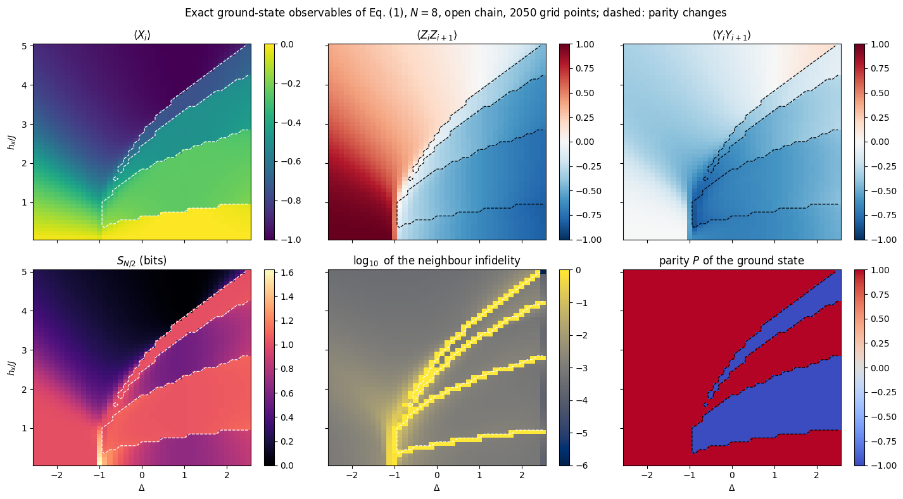
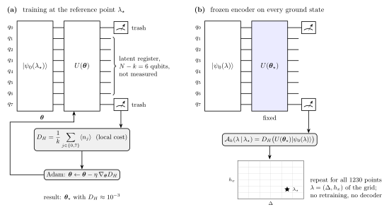
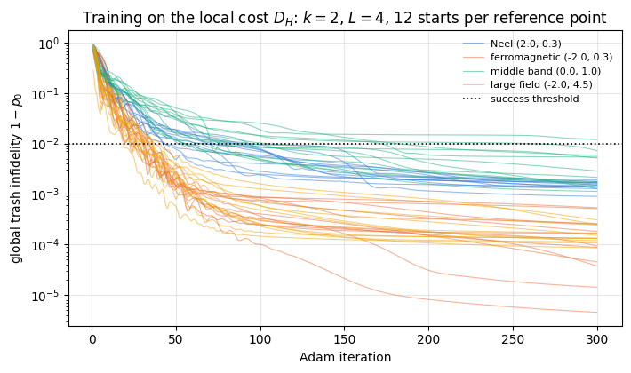
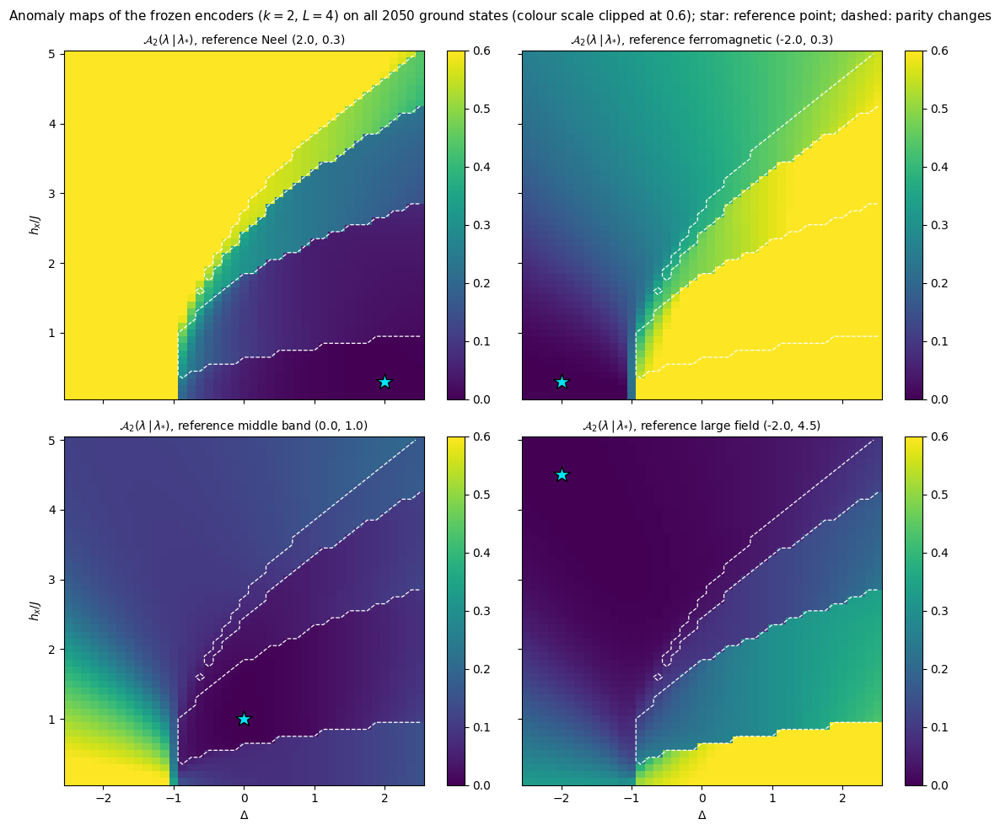
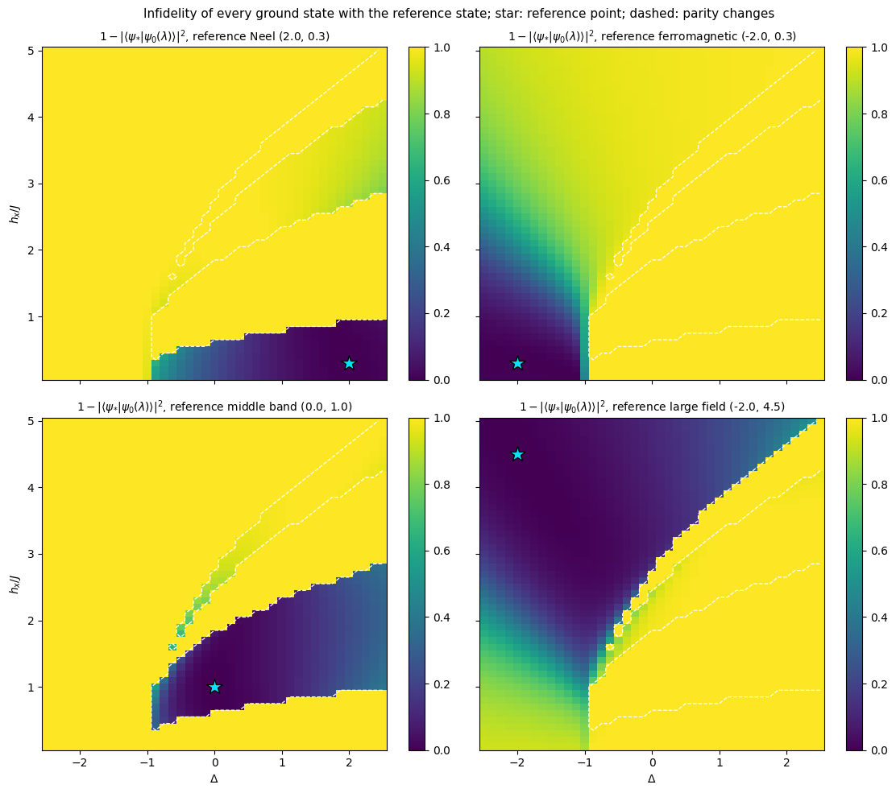
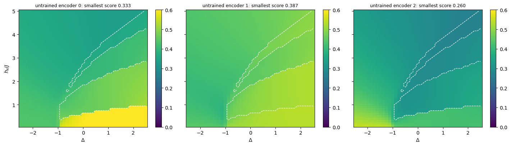
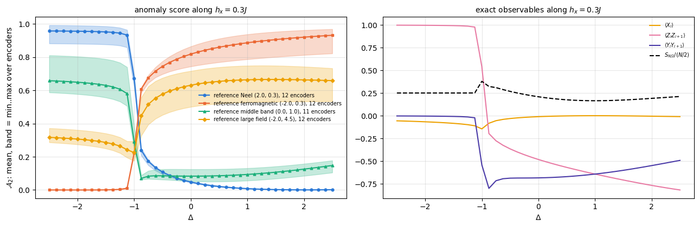
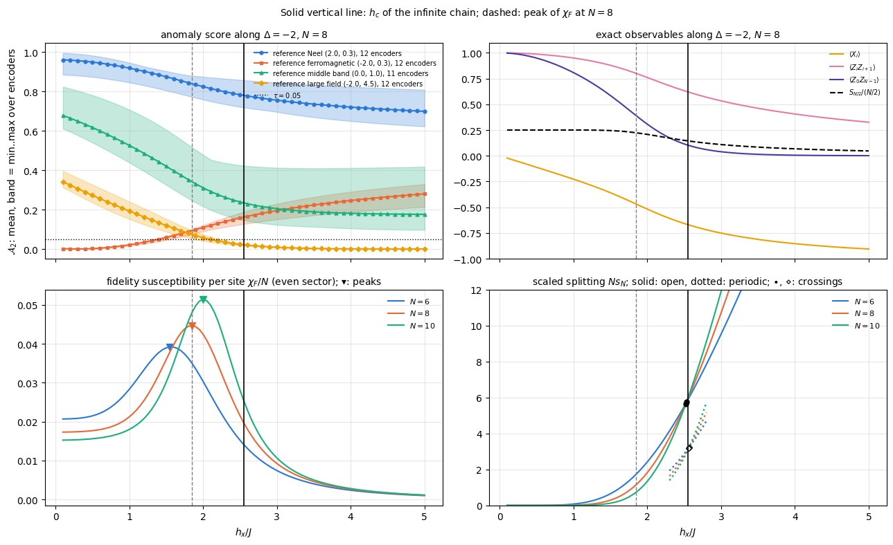

Locating a phase transition usually starts from an order parameter: a magnetisation, a staggered magnetisation, a string correlator, chosen because one already knows what orders. For a new model, or for data from a quantum simulator, that knowledge may be missing. We ask whether the boundaries of a phase diagram can be found from the ground states alone, without telling the algorithm what to look for.
The idea comes from anomaly detection in machine learning. A model is trained to reproduce “normal” data; on data unlike the training set it fails, and the size of the failure flags an anomaly. For phase diagrams one trains on ground states from one region of parameter space and scans the rest: states of the same phase should be reproduced well and states of other phases badly. Kottmann, Huembeli, Lewenstein and Acín (2020) used deep neural networks trained for anomaly detection to map the phase diagram of the extended Bose–Hubbard model without supervision. Kottmann, Metz, Fraxanet and Baldelli (2021) proposed a quantum version, variational quantum anomaly detection, which processes the ground states on the same quantum device that prepares them. Its circuit is modelled on the quantum autoencoder of Romero, Olson and Aspuru-Guzik (2017) (notebook 45): an encoder is trained to drive a few trash qubits of one input state into \(\vert0\cdots0\rangle\), and for any other input the residual excitation of the trash qubits is the anomaly score. They report that a single ground state was enough training data to infer the three phases of their model.
We study this protocol on a chain of \(N=8\) spins with the Hamiltonian
the XXZ chain in a field transverse to its anisotropy axis, over the plane \(-2.5\le\Delta\le2.5\), \(0.1\le h_x/J\le5\). Because \(N=8\) is small, every ground state is available exactly, and so is every observable one might have chosen as an order parameter. The exact data serve as the reference against which the anomaly maps are judged.
Road map.
Section 3 computes the 2050 ground states of the grid by Lanczos inside the two sectors of the spin-flip symmetry of Eq. (1), and draws the reference phase diagram from exact observables. The finite chain has sharp lines (level crossings and a narrowly avoided crossing) and smooth crossovers, which we compare with the phase diagram of the infinite chain.
Section 4 defines the anomaly score. The local Hamming cost \(D_H\) of the trash register and the global trash infidelity \(1-p_0\) are bounded by each other, \(D_H\le1-p_0\le kD_H\); the score of a frozen encoder is bounded by the infidelity of the input with the training state; the encoder with all angles zero scores exactly \(1/2\) on every ground state. We also measure how the gradients of the two costs compare at random initialisation.
Section 5 trains encoders at four reference points, with the step size bracketed for both costs and success statistics over random starts.
Section 6 applies the frozen encoders to all ground states, tests them against untrained encoders, and compares the maps with exact data along two cuts: one through the avoided crossing at small field, and one through the field-induced transition from the ferromagnet to the field-polarised phase, where the exact finite-size precursors are followed at \(N=6\), \(8\) and \(10\). It closes by varying the number of trash qubits.
Section 7 lists what limits the method.
What you will learn
Physics
how a symmetry of the Hamiltonian organises the ground states of a finite chain, and why states of opposite symmetry are exactly orthogonal;
how the phase diagram of the infinite chain appears at \(N=8\): an avoided crossing at a phase boundary, level crossings inside the symmetry-broken phases, and a smooth crossover in place of an Ising-type transition, whose finite-size precursors (fidelity-susceptibility peak, scaled gap) move towards the critical field as \(N\) grows;
what the anomaly score of a frozen autoencoder measures, and what it does not.
Numerical methods
Lanczos restricted to a symmetry sector, in real arithmetic, for a whole parameter grid at once;
inequalities that connect a local cost, a global cost and an overlap, and their numerical checks;
controls for an unsupervised method: an untrained encoder, the identity encoder, a second reference point, and statistics over random starts with Wilson intervals.
Implementation practice
one compiled program for 4100 Lanczos runs, and one for many training runs that differ in cost function, step size, input state and trash register, all entering as traced arrays;
the trash register as a 0/1 mask, so that changing it does not trigger a recompilation;
separating compilation time from execution time with jax.jit(...).lower(...).compile().
Prerequisites
45 — the quantum autoencoder: encoder, trash, decoder; the bounds \(F_{\rm trash}^2\le F_{\rm rec}\le F_{\rm trash}\) of its Section 4.2;
The ground-state fidelity and the Kosterlitz–Thouless point of the XXZ chain, both mentioned below, are treated in 47 — quantum phase transitions, Sections 7 and 10.
Configuration
Every notebook of this course starts with the same cell. Choose where to run (DEVICE) and the floating-point precision (PRECISION): "double" = float64/complex128 (default, recommended for physics), "single" = float32/complex64 (half the memory, faster on consumer GPUs, but watch the round-off). All code below derives its dtypes from RDTYPE/CDTYPE and its check tolerances from TOL, so nothing else needs to change.
Code
# ==============================================================================# CONFIGURATION -- adapt to your hardware, then run the notebook top to bottom# ==============================================================================DEVICE ="auto"# "auto": use a GPU if JAX finds one, else CPU | "cpu" | "gpu"PRECISION ="double"# "double": float64/complex128 | "single": float32/complex64import osif DEVICE =="cpu": os.environ["JAX_PLATFORMS"] ="cpu"# must be set BEFORE jax is importedimport stringfrom functools import partialimport mathimport numpy as npimport jaximport jax.numpy as jnpfrom jax import lax# Precision is configurable: "double" = float64/complex128 (default; needed for long time evolutions and# tight validation), "single" = float32/complex64 (half the memory, faster on consumer GPUs).# In a notebook PRECISION is defined in the Configuration cell; for this module use the env var QE_PRECISION.PRECISION =globals().get("PRECISION", os.environ.get("QE_PRECISION", "double"))jax.config.update("jax_enable_x64", PRECISION =="double")RDTYPE = jnp.float64 if PRECISION =="double"else jnp.float32 # real dtypeCDTYPE = jnp.complex128 if PRECISION =="double"else jnp.complex64 # complex dtype of all states/operatorsTOL =1e-10if PRECISION =="double"else1e-4# tolerance for sanity checks (asserts)_LETTERS = string.ascii_letters # the 52 einsum index labels a-z, A-Zimport timeimport matplotlib.pyplot as pltif DEVICE =="gpu"and jax.default_backend() =="cpu":print("WARNING: DEVICE='gpu' requested but JAX found no GPU -- running on CPU.")print(f"JAX {jax.__version__} | backend: {jax.default_backend()} | devices: {jax.devices()}")print(f"precision: {PRECISION} -> real {RDTYPE.__name__}, complex {CDTYPE.__name__}, check tolerance TOL={TOL:g}")
JAX 0.11.0 | backend: cpu | devices: [CpuDevice(id=0)]
precision: double -> real float64, complex complex128, check tolerance TOL=1e-10
2. Engine recap and notebook helpers
The notebook needs the gate machinery and the hardware-efficient ansatz, the term-list Hamiltonian with its matrix-free product, two Lanczos solvers (the restarted one of notebook 11 for a check, and the compiled lanczos_lowest for the grid), reduced density matrices and the entanglement entropy.
Engine recap — the simulator primitives used in this notebook (click to expand)
# ==============================================================================# ENGINE RECAP: the functions of quantum_engine.py (SmoQ.jax) used in this notebook.# Each one is derived, with its mathematics and an independent check, in notebook 08b# (Chapter 3), 'Building the quantum simulator engine'.# States are rank-N tensors of shape (2,)*N; every operator acts through ONE einsum.# ==============================================================================# ----------------------------------------------------------------------------# 1. Elementary matrices: Paulis, Clifford generators, rotations# ----------------------------------------------------------------------------X = jnp.array([[0, 1], [1, 0]], dtype=CDTYPE)Y = jnp.array([[0, -1j], [1j, 0]], dtype=CDTYPE)Z = jnp.array([[1, 0], [0, -1]], dtype=CDTYPE)CZ = jnp.diag(jnp.array([1, 1, 1, -1], dtype=CDTYPE))XX = jnp.kron(X, X)YY = jnp.kron(Y, Y)ZZ = jnp.kron(Z, Z)def ry(theta):"""Rotation about y: Ry(theta) = exp(-i theta Y/2) = [[cos, -sin], [sin, cos]](theta/2) (real matrix).""" c, s = jnp.cos(theta /2), jnp.sin(theta /2)return jnp.array([[c, -s], [s, c]], dtype=CDTYPE)def rz(theta):"""Rotation about z: Rz(theta) = exp(-i theta Z/2) = diag(e^{-i theta/2}, e^{+i theta/2}).""" e = jnp.exp(-0.5j* theta)return jnp.array([[e, 0], [0, jnp.conj(e)]], dtype=CDTYPE)# ----------------------------------------------------------------------------# 2. THE core primitive: a k-qubit operator acting on a tensor through ONE einsum# ----------------------------------------------------------------------------def apply_gate(psi, U, qubits):"""Apply a k-qubit operator U to the axes `qubits` of the tensor `psi`. MATH ---- One qubit (k=1), target q: psi'[s_0,..,a,..,s_{N-1}] = sum_b U[a,b] psi[s_0,..,b,..,s_{N-1}] Two qubits (k=2), targets (q1,q2); the 4x4 matrix is reshaped to U[a1,a2,b1,b2]: psi'[.., a1, .., a2, ..] = sum_{b1,b2} U[a1,a2,b1,b2] psi[.., b1, .., b2, ..] This IS the action of (1 x .. x U x .. x 1) -- written without ever building it. EINSUM TRANSLATION (generated automatically below) ------------------ N=3, q=1 : "db,abc->adc" d = new (output) index of qubit 1 N=4, q=(1,3) : "efbd,abcd->aecf" e,f = new indices of qubits 1 and 3 Recipe: label the axes of psi with letters a,b,c,...; give every target qubit a NEW letter (the next unused ones); U carries (new letters)+(old letters of the targets); the output is psi's labels with the target letters replaced by the new ones. IMPLEMENTATION NOTES -------------------- * reshape of U: (2^k,2^k) -> (2,)*2k. Row index = (a1..ak), column = (b1..bk), and the FIRST qubit in `qubits` is the most significant bit of the small matrix, i.e. it corresponds to the LEFT factor of kron(A,B). * `qubits` may be any distinct axes in any order: non-neighbouring gates cost the same. * U need not be unitary: projectors, Kraus operators and Hamiltonian terms reuse this. * psi may be ANY tensor with those axes of size 2: a state (rank N), a density tensor (rank 2N: ket axes 0..N-1, bra axes N..2N-1), ... COST O(2^k * 2^N) operations, O(2^N) memory (dense matrix: O(4^N) both). JAX `qubits` must be static Python ints (they define the einsum string); psi and U are traced, so the function can sit inside jit / grad / vmap / scan. """ qubits =tuple(int(q) for q in qubits) k, n =len(qubits), psi.ndim U = jnp.asarray(U, dtype=psi.dtype).reshape((2,) * (2* k)) # matrix -> rank-2k tensor inp =list(_LETTERS[:n]) # labels of psi's axes new = _LETTERS[n:n + k] # fresh labels for the outputs out = inp.copy()for a, q inzip(new, qubits): out[q] = a # target axes get the new labels sub =f"{''.join(new)}{''.join(inp[q] for q in qubits)},{''.join(inp)}->{''.join(out)}"return jnp.einsum(sub, U, psi)# ----------------------------------------------------------------------------# 3. State preparation# ----------------------------------------------------------------------------def zero_state(N):"""|00...0>: a rank-N tensor of zeros with a single 1 at index (0,0,...,0). JAX arrays are immutable: `.at[idx].set(v)` returns an updated COPY (functional style)."""return jnp.zeros((2,) * N, dtype=CDTYPE).at[(0,) * N].set(1.0)def haar_state(key, N):"""Haar-random pure state: a complex Gaussian vector, normalised. (The Gaussian measure is unitarily invariant, so the direction is uniformly distributed.) `key` is an explicit JAX PRNG key -- same key, same state: reproducible science.""" k1, k2 = jax.random.split(key) v = jax.random.normal(k1, (2,) * N) +1j* jax.random.normal(k2, (2,) * N)return (v / jnp.linalg.norm(v)).astype(CDTYPE)# ----------------------------------------------------------------------------# 4. Reduced density matrices & observables (matrix-free)# ----------------------------------------------------------------------------def rdm(psi, keep):"""Reduced density matrix of the qubits `keep` from a PURE state: rho_A = Tr_B |psi><psi|. MATH rho_A[a, a'] = sum_{b} psi[a, b] psi^*[a', b] (a: indices of A, b: of the rest B) EINSUM TRANSLATION N=3, keep=(0,): "abc,Abc->aA" with operands psi, psi^* * letters of B (b,c) appear in BOTH operands and not in the output -> summed = traced out * the kept axis gets a different letter in the second operand -> stays open (a and A) The full |psi><psi| (4^N numbers) is never formed; cost O(2^N 2^|A|). Returns a (2^|A|, 2^|A|) matrix with row/column order following `keep`. """ keep =tuple(int(q) for q in keep) n, k = psi.ndim, len(keep) a =list(_LETTERS[:n]) b = a.copy()for new, q inzip(_LETTERS[n:n + k], keep): b[q] = new sub =f"{''.join(a)},{''.join(b)}->{''.join(a[q] for q in keep)}{''.join(b[q] for q in keep)}"return jnp.einsum(sub, psi, jnp.conj(psi)).reshape(2** k, 2** k)def expect_local(psi, O, qubits):"""<psi| O_qubits |psi> for a k-local operator O (2^k x 2^k matrix). MATH <O> = Tr(rho_A O) with A = `qubits`: a local observable only sees the local state. Cost O(2^N) for the RDM + O(4^k) for the small trace. One RDM serves ALL observables on A (e.g. <X>,<Y>,<Z> from a single 2x2 matrix). """return jnp.real(jnp.trace(rdm(psi, qubits) @ jnp.asarray(O, dtype=CDTYPE)))# ----------------------------------------------------------------------------# 5. State characteristics: entropies, fidelity, negativity# ----------------------------------------------------------------------------def schmidt_values(psi, subsystem):"""Schmidt coefficients of the bipartition A|B with A = `subsystem`. MATH Group the tensor axes into a matrix M[(a),(b)] = psi[a,b] of shape (2^|A|, 2^|B|). Its SVD M = U diag(lambda) V^dag IS the Schmidt decomposition |psi> = sum_k lambda_k |u_k>_A |v_k>_B , rho_A has eigenvalues lambda_k^2. IMPLEMENTATION transpose (A axes first) -> reshape -> svd. No density matrix needed. """ A =tuple(int(q) for q in subsystem) B =tuple(q for q inrange(psi.ndim) if q notin A) M = jnp.transpose(psi, A + B).reshape(2**len(A), -1)return jnp.linalg.svd(M, compute_uv=False)def entanglement_entropy(psi, subsystem, base=2.0):"""Entanglement entropy S_A = -sum_k p_k log p_k with p_k = lambda_k^2 (squared Schmidt values). Product state: 0. Bell/GHZ across any cut: 1 bit. Random state: ~ |A| - 1/(2 ln2) 2^{|A|-|B|} (Page).""" p = jnp.clip(schmidt_values(psi, subsystem) **2, 1e-16, None)return-jnp.sum(p * jnp.log(p)) / jnp.log(base)# ----------------------------------------------------------------------------# 8. Hamiltonians as lists of local terms; H|psi> matrix-free# ----------------------------------------------------------------------------def heisenberg_terms(N, Jxx=1.0, Jyy=1.0, Jzz=1.0, hx=0.0, hy=0.0, hz=0.0, periodic=False, bonds=None):"""Spin-1/2 Hamiltonian in Pauli convention H = sum_<ij> (Jxx X_i X_j + Jyy Y_i Y_j + Jzz Z_i Z_j) + sum_i (hx X_i + hy Y_i + hz Z_i) returned as a LIST of local terms [(qubits, small_matrix), ...] -- this list *is* our Hamiltonian. Heisenberg: Jxx=Jyy=Jzz XXZ: Jxx=Jyy!=Jzz XY: Jzz=0 TFIM: only Jzz and hx. `bonds` overrides the default open chain (any graph: ladders, 2D lattices, all-to-all, ...)."""if bonds isNone: bonds = [(i, i +1) for i inrange(N -1)] + ([(N -1, 0)] if periodic and N >2else []) terms = [((i, j), Jxx * XX + Jyy * YY + Jzz * ZZ) for (i, j) in bonds]if hx !=0or hy !=0or hz !=0: terms += [((i,), hx * X + hy * Y + hz * Z) for i inrange(N)]return termsdef apply_hamiltonian(terms, psi):"""H|psi> = sum_k h_k|psi>, every term applied with `apply_gate` (h_k is Hermitian, not unitary -- the einsum does not care). Cost O(#terms * 2^N). This matrix-vector product is ALL that Lanczos, Chebyshev and Krylov methods need, which is why they scale to N ~ 25-30.""" out = jnp.zeros_like(psi)for qubits, h in terms: out = out + apply_gate(psi, h, qubits)return outdef dense_hamiltonian(terms, N):"""Dense 2^N x 2^N matrix for VALIDATION on small N -- built from the matrix-free action: column j of H is H|e_j>. `jax.vmap` applies H to all basis vectors at once.""" eye = jnp.eye(2** N, dtype=CDTYPE).reshape((2** N,) + (2,) * N) cols = jax.vmap(lambda e: apply_hamiltonian(terms, e).reshape(-1))(eye)return cols.T# ----------------------------------------------------------------------------# 9. Time evolution: TEBD / Trotter-Suzuki, Chebyshev, Krylov, exact# ----------------------------------------------------------------------------def lanczos(matvec, v0, m=60, reorth=True):"""m-step Lanczos iteration: orthonormal basis V of the Krylov space span{v, Hv, H^2 v, ...} in which H is TRIDIAGONAL: T = V^dag H V = tridiag(beta, alpha, beta). Recurrence w = H v_j - alpha_j v_j - beta_{j-1} v_{j-1}, alpha_j = <v_j|H|v_j>, beta_j = ||w||. `reorth=True` re-orthogonalises against all previous vectors (cures the loss of orthogonality of floating-point Lanczos at the price of O(m^2) inner products). Only `matvec` (H|psi>) is needed -> matrix-free. Returns (alphas, betas, V[m, 2,..,2]). """ v = v0 / jnp.linalg.norm(v0) V, alphas, betas = [v], [], [] w = matvec(v)for j inrange(m): a = jnp.real(jnp.vdot(V[j], w)) alphas.append(a) w = w - a * V[j] - (betas[-1] * V[j -1] if j >0else0.0)if reorth:for u in V: w = w - jnp.vdot(u, w) * u b = jnp.linalg.norm(w)if j == m -1orfloat(b) <1e-12:break betas.append(b) V.append(w / b) w = matvec(V[-1])return np.array(alphas, dtype=float), np.array(betas, dtype=float), jnp.stack(V)def lanczos_ground_state(terms, N, m=80, key=None, restarts=3):"""Ground state (E_0, |psi_0>) from restarted Lanczos: diagonalise the small T, map its lowest eigenvector back with V, use it as the next start vector. Extremal eigenvalues converge first.""" key = jax.random.PRNGKey(0) if key isNoneelse key v = haar_state(key, N) mv = jax.jit(lambda p: apply_hamiltonian(terms, p)) E =Nonefor _ inrange(restarts): a, b, V = lanczos(mv, v, m) w, S_ = np.linalg.eigh(np.diag(a) + np.diag(b, 1) + np.diag(b, -1)) v = jnp.tensordot(jnp.asarray(S_[:, 0], dtype=CDTYPE), V, axes=1) v = v / jnp.linalg.norm(v) E = w[0]returnfloat(E), v# ----------------------------------------------------------------------------# 15. Variational circuits: ansatz, gradients, optimizers# ----------------------------------------------------------------------------def hea_num_params(N, layers):"""Number of angles of `hardware_efficient_ansatz`: (layers+1) rotation blocks x N qubits x 2 angles."""return2* N * (layers +1)def hardware_efficient_ansatz(theta, N, layers, entangler=CZ, periodic=False):"""Hardware-efficient ansatz |psi(theta)> = R(theta_L) * prod_{l<L} [ ENT * R(theta_l) ] |0...0>, R = prod_q Rz(.) Ry(.), ENT = a chain of CZ (or any 2-qubit gate). `theta` is a flat vector of length 2N(L+1). The function is a pure map theta -> state, hence jit-able and differentiable end to end.""" theta = theta.reshape(layers +1, N, 2) psi = zero_state(N)for l inrange(layers +1):for q inrange(N): psi = apply_gate(psi, ry(theta[l, q, 0]), [q]) psi = apply_gate(psi, rz(theta[l, q, 1]), [q])if l < layers:for q inrange(N -1): psi = apply_gate(psi, entangler, [q, q +1])if periodic and N >2: psi = apply_gate(psi, entangler, [N -1, 0])return psidef lanczos_lowest(matvec, v0, m, mask=None, key=None):"""Lowest eigenpair (E, x) of a Hermitian operator given only matvec, from m Lanczos steps started at v0. MATH beta_j v_{j+1} = H v_j - alpha_j v_j - beta_{j-1} v_{j-1} (notebook 11), full reorthogonalisation (twice); Ritz vector x = sum_j s_j v_j of the lowest eigenvector s of the tridiagonal T. BREAKDOWN beta_j <= 1e-12 ||H||, with ||H|| estimated by the largest ||H v_j|| seen (a RELATIVE test: the rounding residual of an exhausted Krylov space grows with ||H||). The Krylov space K is then invariant, but it need not contain the lowest eigenvector (v0 orthogonal to it, e.g. v0 an eigenvector or in another symmetry sector). Lanczos therefore RESTARTS from a random vector of the allowed space (`mask`), orthogonalised against K, and writes beta_j = 0 into T: T becomes block diagonal and every Ritz value belongs to H. Only if nothing is left (the whole allowed space is exhausted) do the remaining rows of T get a diagonal far above the spectrum, so that their spurious eigenvalues cannot be the lowest. ARGUMENTS mask (shape of v0, 0/1, optional): the subspace H acts on; the restart vectors are drawn inside it. key: PRNG key of the restart vectors (default PRNGKey(0): deterministic). """ shape = v0.shape v0 = (v0 / jnp.linalg.norm(v0)).reshape(-1) mask = jnp.ones(v0.size, dtype=RDTYPE) if mask isNoneelse jnp.asarray(mask, dtype=RDTYPE).reshape(-1) key = jax.random.PRNGKey(0) if key isNoneelse key V0 = jnp.zeros((m, v0.size), dtype=v0.dtype).at[0].set(v0)def orthogonalise(w, V): # w <- w - sum_i v_i <v_i|w>, twice (rounding); V holds the v_i as ROWS w = w - jnp.conj(V @ jnp.conj(w)) @ Vreturn w - jnp.conj(V @ jnp.conj(w)) @ Vdef body(carry, j): V, v, v_prev, beta_prev, alive, hnorm = carry Hv = matvec(v.reshape(shape)).reshape(-1) hnorm = jnp.maximum(hnorm, jnp.linalg.norm(Hv)) # lower bound of ||H||: the scale of the breakdown test alpha = jnp.real(jnp.vdot(v, Hv)) w = orthogonalise(Hv - alpha * v - beta_prev * v_prev, V) beta = jnp.linalg.norm(w) cont = beta >1e-12* hnorm # False: breakdown, K is an invariant subspacedef restart(_): # random vector of the allowed space, orthogonal to K r = mask * jax.random.normal(jax.random.fold_in(key, j), (v.size,), dtype=RDTYPE) r = orthogonalise(r.astype(V.dtype), V) rn = jnp.linalg.norm(r) fresh = rn >1e-8* jnp.sqrt(jnp.sum(mask)) # False: the allowed space is exhaustedreturn r / jnp.where(fresh, rn, 1.0), fresh v_next, fresh = lax.cond(cont, lambda _: (w / jnp.where(cont, beta, 1.0), jnp.array(True)), restart, None) v_next = jnp.where(alive & (cont | fresh), v_next, 0.0) b_out = jnp.where(alive & cont, beta, 0.0) # a restart decouples the new block: T_{j,j+1} = 0 V = V.at[j +1].set(v_next, mode="drop") # at j = m-1 the index j+1 is out of range; "drop" discards that writereturn (V, v_next, v, b_out, alive & (cont | fresh), hnorm), (alpha, b_out, alive) init = (V0, v0, jnp.zeros_like(v0), jnp.zeros((), dtype=RDTYPE), jnp.array(True), jnp.zeros((), dtype=RDTYPE)) (V, _, _, _, _, hnorm), (alphas, betas, used) = lax.scan(body, init, jnp.arange(m)) alphas = jnp.where(used, alphas, 1e3* (1.0+ hnorm)) # unused rows of T: far above every Ritz value evals_T, evecs_T = jnp.linalg.eigh(jnp.diag(alphas) + jnp.diag(betas[:-1], 1) + jnp.diag(betas[:-1], -1)) # Ritz values and vectors of T x = evecs_T[:, 0].astype(V.dtype) @ V # Ritz vector of the lowest Ritz value, in the big spacereturn evals_T[0], (x / jnp.linalg.norm(x)).reshape(shape)
Code
# ==============================================================================# PLOT STYLE + small statistics helpers# ==============================================================================PALETTE = ["#2a78d6", "#eb6834", "#1baf7a", "#eda100", "#e87ba4", "#4a3aa7"] # colour-blind-friendly, fixed orderMARKERS = ["o", "s", "^", "D", "v", "P"]plt.rcParams.update({"axes.prop_cycle": plt.cycler(color=PALETTE), "axes.grid": True,"grid.alpha": 0.3, "font.size": 10, "legend.frameon": False})def max_abs(a):"""Largest absolute entry of an array, as a Python float."""returnfloat(jnp.max(jnp.abs(jnp.asarray(a))))def wilson_interval(successes, n, z=1.0):"""Wilson score interval for a success probability from `successes` out of `n` trials (z = 1: 68 %). MATH centre = (p + z^2/2n) / (1 + z^2/n), half-width = z sqrt(p(1-p)/n + z^2/4n^2) / (1 + z^2/n), p = s/n. Unlike p +- sqrt(p(1-p)/n) it stays inside [0, 1] and is not zero-width at s = 0 or s = n. """ p = successes / n den =1.0+ z **2/ n centre = (p + z **2/ (2* n)) / den half = z * np.sqrt(p * (1- p) / n + z **2/ (4* n **2)) / denreturn centre - half, centre + halfdef mean_and_se(x):"""Sample mean and standard error of the mean of a 1D array of independent samples.""" x = np.asarray(x, dtype=float)returnfloat(np.mean(x)), float(np.std(x, ddof=1) / np.sqrt(x.size))
3. The model and its exact phase diagram at \(N=8\)
3.1 Limits, symmetry, and what is known
In Eq. (1) \(J>0\), so the \(XX+YY\) coupling favours antiparallel neighbours in the \(xy\) plane, \(\Delta\) sets the coupling of the \(z\) components, and \(h_x\) is a uniform field along \(x\). Three limits fix the vocabulary.
\(h_x\to\infty\): the field term dominates and the ground state is the product state with every spin in the \(-1\) eigenstate of \(X\), \(\vert{-}\rangle^{\otimes N}\); this is the large-field regime.
\(\Delta\to+\infty\): the \(ZZ\) term is minimised by the two Néel configurations \(\vert0101\cdots\rangle\) and \(\vert1010\cdots\rangle\); this is the Néel regime.
\(\Delta\to-\infty\): the \(ZZ\) term is minimised by \(\vert00\cdots0\rangle\) and \(\vert11\cdots1\rangle\), the ferromagnetic regime along \(z\).
At \(h_x=0\) the model is the XXZ chain of notebook 47, Section 10: critical for \(-1<\Delta\le1\), gapped with Néel order for \(\Delta>1\), with a Kosterlitz–Thouless transition at \(\Delta=1\) whose gap opens too slowly to be seen at small \(N\). The same model was mapped by dense diagonalisation in notebook 06, Section 10 and followed to \(N=18\) in notebook 11, Section 12.3. For the infinite chain in the transverse field, Dmitriev, Krivnov, Ovchinnikov and Langari (2002) showed that the field opens a gap in the easy-plane regime (\(\vert\Delta\vert<1\)) and proposed a ground-state phase diagram with three ordered phases below a critical field \(h_c(\Delta)\) — Néel order along \(z\) for \(\Delta>1\), ferromagnetic order along \(z\) for \(\Delta<-1\), and Néel order along \(y\) for \(\vert\Delta\vert<1\) — and a disordered phase above it. They argue that the order–disorder line belongs to the universality class of the transverse-field Ising chain, as it does exactly in the limits \(\Delta\to\pm\infty\); the lines \(\Delta=\pm1\) stay gapless up to a finite field and separate the ordered phases. Their Hamiltonian is written with spin operators \(S=\sigma/2\), so their field \(h\) corresponds to \(h_x=2Jh\) in Eq. (1). For \(\Delta>-1\) the classical line\(h_x^{\rm cl}(\Delta)=2J\sqrt{2(1+\Delta)}\), on which the exact ground state of the periodic chain is a product state, lies below \(h_c\). Translated to Eq. (1), the critical field they give behaves as \(h_c\simeq\vert\Delta\vert J\) in the Ising limits \(\Delta\to\pm\infty\), equals \(4J\) at \(\Delta=1\), and is \(h_c\approx2.91J\) at \(\Delta=0\) (from finite chains, just above \(h_x^{\rm cl}=2.83J\)). For other \(\Delta\) their Fig. 1 draws \(h_c(\Delta)\) from a mean-field treatment in fermion variables, which is exact in the Ising limits and less accurate near \(\Delta=-1\): at \(\Delta=2\) this line runs close to the classical line, near \(5J\), and at \(\Delta=-2\) it lies at \(h\approx1.27\), i.e. \(h_c\approx2.55J\). Section 6.4 checks this last value independently with periodic chains. We use their results as orientation and compare the finite chain with them at the end of Section 3.2 and in Section 6.4; everything else is computed here, the encoders at \(N=8\) and the finite-size comparison at \(N=6\), \(8\) and \(10\).
The spin-flip symmetry. Let \(P=\prod_iX_i\). A single \(X_i\) commutes with \(X_i\) and anticommutes with \(Y_i\) and \(Z_i\). Conjugating a two-site term by \(P\) therefore gives
Every eigenstate of \(H\) can be chosen with \(P=+1\) or \(P=-1\), and two states with different values of \(P\) are orthogonal. In the Néel and ferromagnetic limits the two classical configurations are exchanged by \(P\); the eigenstates are their even and odd combinations, nearly degenerate on a finite chain, and which of them is lower can change as the couplings change. A plain Lanczos run from a random vector converges badly when two levels are that close. We therefore compute the lowest state of each sector separately, as in notebook 11, Section 10, and notebook 47, Section 3: if the start vector has \(P\vert v\rangle=\pm\vert v\rangle\), every Krylov vector \(H^n\vert v\rangle\) has the same parity, and the projector \((1\pm P)/2\) applied after each product removes round-off leakage. The ground state is the lower of the two sector ground states.
Applying \(P\) costs one pass over the amplitudes: \(X\) flips the basis label of one site, so \(\prod_iX_i\) reverses every axis of the state tensor (jnp.flip).
Real arithmetic. In the computational basis \(X\), \(Z\) and \(Y\otimes Y\) are real matrices (the two factors \(\pm i\) of \(Y\otimes Y\) multiply to a real number), so \(H\) is real symmetric and its eigenvectors can be chosen real. Running Lanczos on real vectors halves the memory and divides the arithmetic by about four. The states are converted to complex amplitudes only afterwards, for the encoder, whose \(R_z\) gates are complex.
Code
# ==============================================================================# STEP 1: the Hamiltonian as three real term lists, the parity, and a sector-restricted ground-state solver# ==============================================================================# PARAMETERSN =8# spins = qubitsJ =1.0# exchange coupling, J > 0M_LANCZOS =70# Lanczos steps per ground state (each parity sector has dimension 2^(N-1) = 128)def real_terms(terms):"""The same term list with real matrices (all terms of Eq. (1) are real in the computational basis)."""for _, h in terms:assert max_abs(jnp.imag(h)) ==0.0return [(q, jnp.real(h).astype(RDTYPE)) for q, h in terms]TERMS_XY = real_terms(heisenberg_terms(N, Jxx=J, Jyy=J, Jzz=0.0)) # J sum_i (X_i X_{i+1} + Y_i Y_{i+1})TERMS_ZZ = real_terms(heisenberg_terms(N, Jxx=0.0, Jyy=0.0, Jzz=J)) # J sum_i Z_i Z_{i+1} (times Delta)TERMS_X = real_terms([((i,), X) for i inrange(N)]) # sum_i X_i (times h_x)def apply_H(psi, delta, hx):"""H(Delta, h_x)|psi> of Eq. (1), matrix-free. MATH H = J sum (X X + Y Y) + Delta J sum Z Z + h_x sum X. The two couplings multiply fixed term lists, so they enter as TRACED numbers: one compiled function serves the whole (Delta, h_x) plane. """return (apply_hamiltonian(TERMS_XY, psi) + delta * apply_hamiltonian(TERMS_ZZ, psi)+ hx * apply_hamiltonian(TERMS_X, psi))def apply_parity(psi):"""P|psi> with P = prod_i X_i: X flips the basis label of one site, so P reverses every axis of the tensor."""return jnp.flip(psi, axis=tuple(range(psi.ndim)))def project_parity(psi, sign):"""(1 + sign P)/2 |psi> -- the projector onto the sector P = sign (not normalised: it must stay linear)."""return0.5* (psi + sign * apply_parity(psi))def sector_ground_state(delta, hx, sign, v0):"""Lowest eigenpair of H(delta, hx) inside the parity sector `sign` = +-1. MATH [H, P] = 0 (Eq. (2)), so the Krylov space of a start vector with P v = sign v stays in that sector. The projector is applied after every matrix-vector product to remove round-off leakage. JAX built on the engine's `lanczos_lowest` (a lax.scan with full re-orthogonalisation): delta and hx are traced, so `vmap` runs the whole grid in one compiled program. COST M_LANCZOS products of O(N 2^N) plus O(M_LANCZOS^2 2^N) for the re-orthogonalisation. """ v = project_parity(v0, sign)return lanczos_lowest(lambda p: project_parity(apply_H(p, delta, hx), sign), v / jnp.linalg.norm(v), M_LANCZOS)def terms_at(delta, hx):"""The same Hamiltonian as ONE (complex) term list, for the dense validation and the engine's Lanczos."""return heisenberg_terms(N, Jxx=J, Jyy=J, Jzz=J * delta, hx=hx)# --- CHECKPOINT: [H, P] = 0 on a random real vector ------------------------------------------------------V0 = jax.random.normal(jax.random.PRNGKey(0), (2,) * N, dtype=RDTYPE) # ONE start vector for every grid pointcomm = apply_H(apply_parity(V0), 0.7, 1.3) - apply_parity(apply_H(V0, 0.7, 1.3))print(f"|| [H, P] v || for a random v : {max_abs(comm):.2e}")assert max_abs(comm) < TOL# --- CHECKPOINT: the two sector ground states against a dense diagonalisation ----------------------------print(f"\n{'Delta':>6s}{'h_x':>5s}{'E0(P=+1)':>14s}{'E0(P=-1)':>14s}{'dense E0':>14s}{'dense E1':>14s}")for d_, h_ in [(2.0, 0.3), (-2.0, 0.3), (0.0, 1.0), (-2.0, 2.5), (1.0, 2.0)]: Ep, _ = sector_ground_state(d_, h_, +1.0, V0) Em, _ = sector_ground_state(d_, h_, -1.0, V0) w_ = np.linalg.eigvalsh(np.asarray(dense_hamiltonian(terms_at(d_, h_), N)))print(f"{d_:6.2f}{h_:5.2f}{float(Ep):14.9f}{float(Em):14.9f}{w_[0]:14.9f}{w_[1]:14.9f}")assertabs(min(float(Ep), float(Em)) - w_[0]) <1e-8# the lower sector holds the ground stateassertmax(float(Ep), float(Em)) > w_[1] -1e-8# the other sector's lowest level is an excited one# --- CHECKPOINT: agreement with the engine's restarted (complex, unrestricted) Lanczos at a gapped point -------E_eng, psi_eng = lanczos_ground_state(terms_at(-2.0, 2.5), N)E_sec, psi_sec = sector_ground_state(-2.0, 2.5, +1.0, V0)ovl_eng =float(jnp.abs(jnp.vdot(psi_eng, psi_sec.astype(CDTYPE))) **2)print(f"\nDelta = -2, h_x = 2.5: engine lanczos_ground_state E0 = {E_eng:.10f}, sector solver {float(E_sec):.10f},"f" |<psi|psi'>|^2 = {ovl_eng:.12f}")assertabs(E_eng -float(E_sec)) <1e-8andabs(ovl_eng -1) <1e-8
|| [H, P] v || for a random v : 0.00e+00
Delta h_x E0(P=+1) E0(P=-1) dense E0 dense E1
At every test point the lower of the two sector energies is the dense ground-state energy, and the other one is the first excited level, so the two runs deliver the two lowest levels. At \((\Delta,h_x)=(-2,0.3)\), deep in the ferromagnetic regime, the two levels are split by about \(1.4\times10^{-7}\); the sector solver resolves them because the competing level is never in the same Krylov space. At \((0,1)\) and \((1,2)\) the ground state has \(P=-1\): a solver confined to the even sector would have returned an excited state there. Where the gap is large, the sector solver reproduces the engine’s restarted Lanczos to ten digits in energy and to twelve in the overlap.
Code
# ==============================================================================# STEP 2: ground states on the whole (Delta, h_x) grid, both sectors, one compiled program# ==============================================================================# PARAMETERSDELTAS = np.round(np.linspace(-2.5, 2.5, 41), 6) # anisotropy, spacing 0.125HXS = np.round(np.linspace(0.1, 5.0, 50), 6) # transverse field / J, spacing 0.1 (h_x = 0 excluded, see text)TIE =1e-9# sector energies closer than this count as degenerate -> P = +1DD, HH = np.meshgrid(DELTAS, HXS) # shape (n_h, n_Delta): rows = h_x, columns = Deltagrid_d, grid_h = jnp.asarray(DD.ravel(), dtype=RDTYPE), jnp.asarray(HH.ravel(), dtype=RDTYPE)def ground_state(delta, hx):"""Ground state of H(delta, hx): the lower of the two sector ground states (P = +1 on a tie). Returns (E0, psi0, parity of psi0, E0 of the other sector, residual ||H psi0 - E0 psi0||).""" Ep, vp = sector_ground_state(delta, hx, 1.0, V0) Em, vm = sector_ground_state(delta, hx, -1.0, V0) plus = Ep <= Em + TIE E0, psi0 = jnp.where(plus, Ep, Em), jnp.where(plus, vp, vm) resid = jnp.linalg.norm(apply_H(psi0, delta, hx) - E0 * psi0)return E0, psi0, jnp.where(plus, 1.0, -1.0), jnp.where(plus, Em, Ep), residt0 = time.perf_counter()gs_compiled = jax.jit(jax.vmap(ground_state)).lower(grid_d, grid_h).compile()t1 = time.perf_counter()E0_g, PSI_g, PAR_g, EOTHER_g, RES_g = jax.block_until_ready(gs_compiled(grid_d, grid_h))t2 = time.perf_counter()n_pts = grid_d.sizeprint(f"{n_pts} grid points x 2 parity sectors: compilation {t1 - t0:.1f} s, execution {t2 - t1:.1f} s "f"({1e3* (t2 - t1) / (2* n_pts):.1f} ms per Lanczos run)")print(f"largest residual ||H psi0 - E0 psi0|| on the grid : {float(jnp.max(RES_g)):.2e}")par_dev = jnp.max(jnp.abs(jax.vmap(lambda p: jnp.sum(p * apply_parity(p)))(PSI_g) - PAR_g))print(f"largest deviation of <P> from +-1 : {float(par_dev):.2e}")print(f"fraction of grid points whose ground state has P = -1: {float(jnp.mean(PAR_g <0)):.3f}")assertfloat(jnp.max(RES_g)) <1e-6andfloat(par_dev) <1e-8SHAPE = DD.shapePSI_g = PSI_g.astype(CDTYPE) # complex amplitudes from here on (the encoder has Rz gates)PSI = PSI_g.reshape(SHAPE + (2,) * N) # ground states, indexed [i_h, i_Delta]PARITY = np.asarray(PAR_g).reshape(SHAPE)def grid_index(delta, hx):"""(row, column) of the grid point closest to (delta, hx)."""returnint(np.argmin(np.abs(HXS - hx))), int(np.argmin(np.abs(DELTAS - delta)))
2050 grid points x 2 parity sectors: compilation 0.9 s, execution 19.9 s (4.9 ms per Lanczos run)
largest residual ||H psi0 - E0 psi0|| on the grid : 2.43e-08
largest deviation of <P> from +-1 : 1.22e-15
fraction of grid points whose ground state has P = -1: 0.254
All 4100 Lanczos runs are one call of one compiled function; the residuals stay below \(10^{-7}\) and every state has parity \(\pm1\) to machine precision. About a quarter of the grid has an odd ground state.
The grid starts at \(h_x=0.1\). At \(h_x=0\) and \(\Delta<-1\) the two ferromagnetic states belong to different sectors of the conserved magnetisation \(\sum_iZ_i\), the even and odd combinations are exactly degenerate, and “the” ground state is not defined. Any \(h_x>0\) splits them, by an amount that falls steeply with decreasing field (at \(h_x=0.3\), \(\Delta=-2\) we found \(1.4\times10^{-7}\)). Splittings below TIE are treated as degeneracies and resolved towards \(P=+1\).
JAX practice.jax.jit(f).lower(args).compile() traces and compiles without running; calling the compiled object then measures execution alone. The two numbers answer different questions: compilation is paid once per array shape, execution once per call.
3.2 The reference phase diagram
From each ground state we compute four observables: the transverse polarisation \(\langle X_i\rangle\), the nearest-neighbour correlations \(\langle Z_iZ_{i+1}\rangle\) and \(\langle Y_iY_{i+1}\rangle\) (each averaged over the chain), and the half-chain entanglement entropy \(S_{N/2}\) in bits. Two further maps need no choice of operator. The neighbour infidelity\(1-\vert\langle\psi_0(\lambda)\vert\psi_0(\lambda')\rangle\vert^2\), with \(\lambda'\) the next grid point to the right or above (the larger of the two is shown), is the finite-difference form of the ground-state fidelity of notebook 47, Section 7 (Zanardi and Paunković, 2006): small where the state changes smoothly, close to \(1\) where it jumps. The parity of the ground state marks the level crossings between the two sectors.
Code
# ==============================================================================# STEP 3: the reference phase diagram from exact observables# ==============================================================================XX_, YY_, ZZ_ = jnp.kron(X, X), jnp.kron(Y, Y), jnp.kron(Z, Z)def observables(psi):"""Per-site <X>, nearest-neighbour <ZZ> and <YY> (averaged over the chain), half-chain entropy in bits.""" mx = jnp.mean(jnp.stack([expect_local(psi, X, (i,)) for i inrange(N)])) zz = jnp.mean(jnp.stack([expect_local(psi, ZZ_, (i, i +1)) for i inrange(N -1)])) yy = jnp.mean(jnp.stack([expect_local(psi, YY_, (i, i +1)) for i inrange(N -1)]))return mx, zz, yy, entanglement_entropy(psi, tuple(range(N //2)))MX, ZZC, YYC, SHALF = [np.asarray(o).reshape(SHAPE) for o in jax.jit(jax.vmap(observables))(PSI_g)]def overlap2(a, b):"""|<a|b>|^2 over the last N axes (broadcasts over leading grid axes)."""return jnp.abs(jnp.sum(jnp.conj(a) * b, axis=tuple(range(-N, 0)))) **2NB = np.zeros(SHAPE) # neighbour infidelity, max over the right and upper neighboursNB[:, :-1] = np.maximum(NB[:, :-1], 1- np.asarray(overlap2(PSI[:, :-1], PSI[:, 1:])))NB[:-1, :] = np.maximum(NB[:-1, :], 1- np.asarray(overlap2(PSI[:-1, :], PSI[1:, :])))for name, (d_, h_) in {"ferromagnetic (-2.0, 0.3)": (-2.0, 0.3), "Neel ( 2.0, 0.3)": (2.0, 0.3),"middle band ( 0.0, 1.0)": (0.0, 1.0), "large field (-2.0, 4.5)": (-2.0, 4.5)}.items(): i, j = grid_index(d_, h_)print(f"{name}: <X> = {MX[i, j]:+.3f} <ZZ> = {ZZC[i, j]:+.3f} <YY> = {YYC[i, j]:+.3f} "f"S_half = {SHALF[i, j]:.3f} bits P = {PARITY[i, j]:+.0f}")# a dense check of the sharp line at Delta = -1, h_x = 0.3: level crossing or avoided crossingprint("\nalong h_x = 0.3: gap to the second level of the EVEN sector (dense), and the neighbour infidelity")P_dense = np.asarray(jax.vmap(apply_parity)(jnp.eye(2** N, dtype=RDTYPE).reshape((2** N,) + (2,) * N)).reshape(2** N, -1))w_P, V_P = np.linalg.eigh(P_dense)B_even = V_P[:, w_P >0] # orthonormal basis of the P = +1 sector (128 vectors)for d_ in (-1.25, -1.125, -1.0, -0.875, -0.75): we = np.linalg.eigvalsh(B_even.T @ np.real(np.asarray(dense_hamiltonian(terms_at(d_, 0.3), N))) @ B_even) i, j = grid_index(d_, 0.3)print(f" Delta = {d_:+.3f}: E1 - E0 in the even sector = {we[1] - we[0]:.4f} neighbour infidelity "f"(to Delta + 0.125) = {1-float(overlap2(PSI[i, j], PSI[i, j +1])):.3f}")# the parity crossings along three lines of constant Delta, against the classical line of Section 3.1print("\nparity changes of the ground state along lines of constant Delta (midpoints of the grid intervals):")for d_ in (-2.0, 0.0, 2.0): col = PARITY[:, grid_index(d_, 0.1)[1]] x_par = HXS[:-1][np.diff(col) !=0] +0.05 h_cl =f"{2* J * np.sqrt(2* (1+ d_)):.2f}"if d_ >-1else"none"print(f" Delta = {d_:+.1f}: {len(x_par)} changes, at h_x = {', '.join(f'{x:.2f}'for x in x_par) or'-'};"f" classical line h_x^cl = {h_cl}")def draw_parity_lines(ax, color="w"):"""Dashed contour where the parity of the ground state changes (level crossings of the finite chain).""" ax.contour(DELTAS, HXS, PARITY, levels=[0.0], colors=color, linewidths=0.9, linestyles="--")fig, axes = plt.subplots(2, 3, figsize=(14.5, 8.0), sharex=True, sharey=True)panels = [(MX, r"$\langle X_i\rangle$", "viridis", None), (ZZC, r"$\langle Z_iZ_{i+1}\rangle$", "RdBu_r", (-1, 1)), (YYC, r"$\langle Y_iY_{i+1}\rangle$", "RdBu_r", (-1, 1)), (SHALF, r"$S_{N/2}$ (bits)", "magma", None), (np.log10(np.maximum(NB, 1e-8)), r"$\log_{10}$ of the neighbour infidelity", "cividis", (-6, 0)), (PARITY, r"parity $P$ of the ground state", "coolwarm", (-1, 1))]for ax, (data, title, cmap, lim) inzip(axes.flat, panels): kw = {} if lim isNoneelse {"vmin": lim[0], "vmax": lim[1]} im = ax.pcolormesh(DELTAS, HXS, data, shading="nearest", cmap=cmap, **kw) draw_parity_lines(ax, "k"if cmap in ("RdBu_r", "coolwarm") else"w") fig.colorbar(im, ax=ax) ax.set_title(title) ax.grid(False)for ax in axes[:, 0]: ax.set_ylabel(r"$h_x/J$")for ax in axes[1, :]: ax.set_xlabel(r"$\Delta$")fig.suptitle(f"Exact ground-state observables of Eq. (1), $N={N}$, open chain, {n_pts} grid points; dashed: parity changes")fig.tight_layout(); plt.show()
ferromagnetic (-2.0, 0.3): <X> = -0.067 <ZZ> = +0.996 <YY> = -0.004 S_half = 1.000 bits P = +1
Neel ( 2.0, 0.3): <X> = -0.006 <ZZ> = -0.767 <YY> = -0.549 S_half = 0.764 bits P = +1
middle band ( 0.0, 1.0): <X> = -0.235 <ZZ> = -0.441 <YY> = -0.673 S_half = 1.038 bits P = -1
large field (-2.0, 4.5): <X> = -0.884 <ZZ> = +0.362 <YY> = -0.323 S_half = 0.224 bits P = +1
along h_x = 0.3: gap to the second level of the EVEN sector (dense), and the neighbour infidelity
Delta = -1.250: E1 - E0 in the even sector = 0.8728 neighbour infidelity (to Delta + 0.125) = 0.005
Delta = -1.125: E1 - E0 in the even sector = 0.4569 neighbour infidelity (to Delta + 0.125) = 0.436
Delta = -1.000: E1 - E0 in the even sector = 0.0426 neighbour infidelity (to Delta + 0.125) = 0.733
Delta = -0.875: E1 - E0 in the even sector = 0.1319 neighbour infidelity (to Delta + 0.125) = 0.039
Delta = -0.750: E1 - E0 in the even sector = 0.1892 neighbour infidelity (to Delta + 0.125) = 0.011
parity changes of the ground state along lines of constant Delta (midpoints of the grid intervals):
Delta = -2.0: 0 changes, at h_x = -; classical line h_x^cl = none
Delta = +0.0: 4 changes, at h_x = 0.65, 1.85, 2.45, 2.75; classical line h_x^cl = 2.83
Delta = +2.0: 4 changes, at h_x = 0.95, 2.65, 3.95, 4.65; classical line h_x^cl = 4.90

The six panels divide the plane into four regions; the printed lines give one representative point of each. The dashed lines, drawn on every panel, mark the places where the parity of the ground state changes.
Ferromagnetic (\(\Delta\lesssim-1\), small field): \(\langle Z_iZ_{i+1}\rangle=+0.996\) and \(S_{N/2}=1.000\) bit at \((-2,0.3)\). The state is close to the even combination of \(\vert0\cdots0\rangle\) and \(\vert1\cdots1\rangle\), which carries exactly one bit of entanglement across any cut.
Large field (upper part of the plane, above the highest dashed line and, for \(\Delta\lesssim-1\), above the ferromagnetic region): \(\langle X_i\rangle\) moves towards \(-1\) as \(h_x\) grows. At the point \((-2,4.5)\)\(\langle X_i\rangle=-0.884\) and \(S_{N/2}=0.224\) bits, while the nearest-neighbour correlations \(\langle Z_iZ_{i+1}\rangle=+0.362\) are still sizeable. Between this region and the ferromagnetic one neither the neighbour infidelity nor the parity marks a line: the correlations fade gradually. In the infinite chain the two are separated by the order–disorder transition at \(h_c\approx2.55J\) (\(\Delta=-2\)); at \(N=8\) there is only a smooth crossover, and Section 6.4 shows how its finite-size precursors locate the transition.
Small-field antiferromagnetic region (\(\Delta\gtrsim-1\), below the lowest dashed line): \(\langle Z_iZ_{i+1}\rangle<0\), \(\langle X_i\rangle\approx0\). No map shows a feature at \(\Delta=1\), where the infinite chain has its Kosterlitz–Thouless transition at \(h_x=0\) and a gapless line between Néel order along \(z\) and along \(y\) at small \(h_x>0\).
Middle band (between the lowest and the highest dashed line): the parity of the ground state alternates from one dashed line to the next, and \(\langle Y_iY_{i+1}\rangle\) is strongly negative (\(-0.673\) at \((0,1)\)), i.e. antiferromagnetic correlations along \(y\), the axis perpendicular to both the field and the anisotropy axis.
The sharp features are of two kinds. Every dashed line is a level crossing between the two parity sectors: the ground state changes discontinuously, and since states of opposite parity are orthogonal the neighbour infidelity is exactly one there. The line at \(\Delta\approx-1\) for small fields has no parity change. The dense check shows what it is: the gap to the second level of the even sector falls from \(0.87\) at \(\Delta=-1.25\) to \(0.043\) at \(\Delta=-1\) (\(h_x=0.3\)), a narrowly avoided crossing, and the neighbour infidelities across the two grid intervals around \(\Delta=-1\) are \(0.436\) and \(0.733\). A smooth crossover, such as the one between the ferromagnetic and large-field regions, leaves no sharp line, only a faint brightening of the neighbour infidelity (at most \(0.004\) along \(\Delta=-2\), Section 6.4). These three kinds of behaviour are the reference against which the anomaly maps are judged.
The finite chain and the infinite chain. The sharp lines of the finite chain are not the phase boundaries of Section 3.1. All three ordered phases of the infinite chain break the spin-flip symmetry (\(P\) reverses \(Y_i\) and \(Z_i\), and with them the Néel and ferromagnetic order parameters), so their ground state is a doublet of one even and one odd state. On a finite chain the two members are split, and Dmitriev et al. observed, on periodic chains of 10 to 18 sites, that the two lowest levels cross \(N/2\) times as the field grows, the last crossing on the classical line. Our open chain behaves in the same way (last printed lines): along \(\Delta=0\) the eight-site chain has four parity crossings, the last between \(h_x=2.7J\) and \(2.8J\), just below \(h_x^{\rm cl}=2\sqrt2J\approx2.83J\); along \(\Delta=2\) it has four as well, the last between \(4.6J\) and \(4.7J\), below \(h_x^{\rm cl}=2\sqrt6J\approx4.90J\); along \(\Delta=-2\), where the classical line does not exist, it has none, and neither do chains of \(6\) and \(10\) sites. Along \(\Delta=0\) and \(\Delta=2\) chains of \(6\) and \(10\) sites have three and five crossings, and the lowest one moves to smaller fields as \(N\) grows (Exercise 6). The parity crossings are therefore finite-size features inside the ordered phases and mark no transition; in the infinite chain they merge into the degenerate doublet. The avoided crossing at \(\Delta\approx-1\), by contrast, is the finite-size image of the boundary between the ferromagnetic phase and the phase with Néel order along \(y\). The order–disorder line \(h_c(\Delta)\) and the gapless line at \(\Delta=1\) leave no sharp trace at \(N=8\). For \(\Delta<-1\) the order–disorder transition is the only feature of a line of increasing field, free of parity crossings; for \(\Delta\gtrsim0\) it lies just above the last parity crossing (\(h_c\approx2.91J\) against \(2.83J\) at \(\Delta=0\), both near \(5J\) at \(\Delta=2\)) and cannot be told apart from it at \(N=8\). This is why Section 6.4 follows the transition along \(\Delta=-2\).
4. The anomaly score of a frozen autoencoder
4.1 The encoder and the trash register
The encoder \(U(\boldsymbol\theta)\) is the hardware-efficient ansatz of notebooks 40 and 45 applied to the input state: \(L\) layers of [\(R_y\) and \(R_z\) on every qubit, then a chain of \(CZ\) gates], and a final rotation block, with \(n=2N(L+1)\) angles. A set \(T\) of \(k\) qubits is declared the trash register. We place the trash at the two ends of the chain (\(k=2\): qubits \(0\) and \(7\)); Exercise 4 compares this choice with two adjacent trash qubits at one end. Kottmann et al. used a different circuit, with \(R_y\) rotations only and \(CZ\) gates between trash and non-trash qubits and among the trash qubits; the inequalities derived below hold for any encoder.

Figure 1. (a) The quantum autoencoder of notebook 45 at \(N=8\) with the trash register \(T=\{0,7\}\), \(k=2\): the encoder \(U(\boldsymbol\theta)\) maps the input to a state whose trash qubits are close to \(\vert0\rangle\); they are discarded and replaced by fresh \(\vert0\rangle\)’s, and the decoder \(U^\dagger(\boldsymbol\theta)\) rebuilds the input from the six latent qubits. (b) Training needs only the encoder: the trash qubits are measured and Adam lowers their local cost \(D_H\), Eq. (4), on the reference ground state \(\vert\psi_0(\lambda_\star)\rangle\) to \(10^{-3}\) or below (Section 5.3). (c) Anomaly detection: the trained encoder \(U(\boldsymbol\theta_\star)\) is kept fixed and applied to the ground state at every point of the \((\Delta,h_x)\) grid; the same local cost is the anomaly score of Eq. (8). The latent qubits are never measured and the decoder is never run.
Write the encoded state in the computational basis of the trash register,
A \(Z\) measurement of the \(k\) trash qubits returns the string \(t\) with probability \(p(t)\). Let \(w(t)\) be its Hamming weight, the number of ones.
4.2 Two costs on the same measurement record
The local cost of the anomaly-detection protocol is the mean excitation of the trash qubits,
where \(n_j=(1-Z_j)/2\) is the projector on \(\vert1\rangle\) of qubit \(j\); the last form holds because \(\sum_jn_j\) is diagonal in the computational basis with eigenvalue \(w(t)\) on \(\vert t\rangle\). Kottmann et al. use the average Hamming distance \(\sum_j(1-\langle Z_j\rangle)/2=kD_H\); the factor \(1/k\) only puts \(D_H\) in \([0,1]\). The global cost is the trash infidelity of notebook 45, Eq. (4),
the probability that at least one trash qubit is found in \(\vert1\rangle\). Both are averages of a function of \(w(t)\) over the same distribution, and for every string \(t\)
\[\frac{w(t)}{k}\;\le\;[\,w(t)>0\,]\;\le\;w(t),\]
because \(0\le w(t)\le k\) and \(w(t)\ge1\) whenever it is non-zero. Averaging over \(p(t)\) gives
\[D_H\;\le\;1-p_0\;\le\;k\,D_H .\tag{6}\]
The right inequality is the union bound: the probability that some trash qubit is excited is at most the sum of the probabilities for each of them. Equation (6) says that the two costs vanish together and differ by at most a factor \(k\). Notebook 45, Eq. (9), bounded the reconstruction fidelity of the full autoencoder (encode, reset the trash, decode) by the trash fidelity, \(F_{\rm rec}\ge p_0^2\); combined with Eq. (6),
so a small local cost guarantees a faithful reconstruction, and the decoder never needs to be run.
4.3 The anomaly map, and what bounds it
Let \(\lambda=(\Delta,h_x)\), let \(\vert\psi_0(\lambda)\rangle\) be the ground state, and let \(\boldsymbol\theta_\star\) be the angles obtained by training on the single state \(\vert\psi_\star\rangle=\vert\psi_0(\lambda_\star)\rangle\) at a reference point\(\lambda_\star\). The anomaly map is the local cost of the frozen encoder on every other ground state,
No retraining happens during the scan; one forward pass of the circuit per grid point suffices.
To see what Eq. (8) measures, let \(\Pi=\mathbb 1_L\otimes\vert0\cdots0\rangle\langle0\cdots0\vert_T\) and \(Q=U^\dagger\Pi U\), the projector onto the \(2^{N-k}\)-dimensional subspace of inputs that the encoder compresses perfectly. Then \(p_0(\psi)=\langle\psi\vert Q\vert\psi\rangle=\lVert Q\psi\rVert^2\), and training leaves a residual \(\varepsilon=1-p_0(\psi_\star)=\lVert(1-Q)\psi_\star\rVert^2\) at the reference. For any other input, the Cauchy–Schwarz inequality with the unit vector \(\psi_\star\), followed by the triangle inequality, gives
A well-trained encoder therefore cannot flag a state that has a large overlap with the training state: the anomaly score is bounded above by the infidelity with the reference state. There is no bound in the other direction. \(Q\) projects on a subspace of dimension \(2^{N-k}\) (64 for \(k=2\)), of which training fixes only one direction, so a state orthogonal to \(\psi_\star\) may still be compressed. How large the region of small scores is, and where it ends, depends on the remaining \(2^{N-k}-1\) directions, which training does not control. Section 6 measures it.
4.4 The identity encoder scores exactly one half
With all angles zero, \(R_y(0)=R_z(0)=\mathbb 1\) and the \(CZ\) chain is diagonal, so \(p(t)\) is the distribution of the trash bits in the input itself and \(\langle Z_j\rangle\) is evaluated on \(\psi_0(\lambda)\). Every ground state on the grid has definite parity, \(P\vert\psi_0\rangle=\pm\vert\psi_0\rangle\), and \(PZ_jP=-Z_j\), so
The untrained identity encoder produces a perfectly flat map. This is the first control: whatever structure a map has is produced by the encoder angles.
Code
# ==============================================================================# STEP 4: encoder, trash costs, and the checks of Eqs. (6) and (10)# ==============================================================================# PARAMETERSLAYERS =4# encoder depth L; n = 2N(L+1) anglesTRASH = {1: (N -1,), 2: (0, N -1), 3: (0, N -2, N -1), 4: (0, 1, N -2, N -1)} # trash at the chain endsN_PAR = hea_num_params(N, LAYERS)def rot_block(psi, row):"""One rotation block: Ry(theta) then Rz(theta) on every qubit."""for q inrange(N): psi = apply_gate(psi, ry(row[q, 0]), [q]) psi = apply_gate(psi, rz(row[q, 1]), [q])return psidef ent_block(psi):"""One entangling block: a chain of CZ gates on the nearest-neighbour bonds."""for q inrange(N -1): psi = apply_gate(psi, CZ, [q, q +1])return psidef encode(theta, psi, layers=LAYERS):"""Encoder U(theta)|psi>: the hardware-efficient ansatz applied to an ARBITRARY input state. MATH U(theta) = R(theta_L) prod_{l<L} [ ENT . R(theta_l) ], R = prod_q Rz(.) Ry(.), ENT = chain of CZ. JAX the L repeated layers are a `lax.scan` over the rows of theta, so the traced graph does not grow with L. """ th = theta.reshape(layers +1, N, 2) psi, _ = lax.scan(lambda p, row: (ent_block(rot_block(p, row)), None), psi, th[:layers])return rot_block(psi, th[layers])# BITS[t, q] = value of qubit q in the basis string t (C order: qubit 0 is the most significant bit)BITS = jnp.asarray((np.arange(2** N)[:, None] >> (N -1- np.arange(N))[None, :]) &1, dtype=RDTYPE)def trash_mask(k):"""0/1 vector of length N marking the k trash qubits of TRASH[k]."""return jnp.asarray([1.0if q in TRASH[k] else0.0for q inrange(N)], dtype=RDTYPE)def trash_costs(phi, mask):"""(D_H, 1 - p_0) of an encoded state phi, for the trash qubits marked by `mask`. MATH p(t) = |phi_t|^2 is the Born distribution of basis strings; w(t) = sum_{q in T} t_q is the Hamming weight of the trash bits of t. Then D_H = E_p[w]/k (Eq. (4)), 1 - p_0 = P_p[w > 0] (Eq. (5)). IMPLEMENTATION w for all 2^N strings is ONE matrix-vector product BITS @ mask; "all trash bits zero" is prod_q (1 - mask_q t_q). The mask is a traced array, so the trash register can change without recompiling. COST O(N 2^N). """ p = jnp.abs(phi.reshape(-1)) **2 k = jnp.sum(mask) d_h = p @ (BITS @ mask) / k p0 = p @ jnp.prod(1.0- BITS * mask[None, :], axis=1)return d_h, 1.0- p0# --- CHECKPOINT: the encoder reproduces the engine ansatz ------------------------------------------------th_chk = jax.random.uniform(jax.random.PRNGKey(1), (N_PAR,), minval=-jnp.pi, maxval=jnp.pi)err_hea = max_abs(encode(th_chk, zero_state(N)) - hardware_efficient_ansatz(th_chk, N, LAYERS))print(f"encode(theta, |0..0>) vs the engine's hardware_efficient_ansatz : {err_hea:.2e}")assert err_hea < TOL# --- CHECKPOINT: trash_costs against reduced density matrices --------------------------------------------phi_chk = encode(th_chk, PSI[grid_index(0.0, 1.0)])for k in (1, 2, 3, 4): d_h, g = trash_costs(phi_chk, trash_mask(k)) n1 = np.mean([float(jnp.real(rdm(phi_chk, (q,))[1, 1])) for q in TRASH[k]]) # <n_q> = <1|rho_q|1> p0 =float(jnp.real(rdm(phi_chk, TRASH[k])[0, 0])) # <0..0|rho_T|0..0>print(f" k = {k}, trash {str(TRASH[k]):13s} D_H = {float(d_h):.10f} (rdm {n1:.10f}) "f"1 - p0 = {float(g):.10f} (rdm {1- p0:.10f})")assertabs(float(d_h) - n1) < TOL andabs(float(g) - (1- p0)) < TOL# --- CHECKPOINT: Eq. (6) for 2000 random encoders applied to random grid states -----------------------------th_r = jax.random.uniform(jax.random.PRNGKey(2), (2000, N_PAR), minval=-jnp.pi, maxval=jnp.pi)idx_r = jax.random.randint(jax.random.PRNGKey(3), (2000,), 0, n_pts)for k in (2, 3, 4): dh_r, g_r = jax.jit(jax.vmap(lambda t, i: trash_costs(encode(t, PSI_g[i]), trash_mask(k))))(th_r, idx_r) dh_r, g_r = np.asarray(dh_r), np.asarray(g_r)print(f" k = {k}: violations of D_H <= 1-p0: {int(np.sum(dh_r > g_r +1e-12))}, of 1-p0 <= k D_H: "f"{int(np.sum(g_r > k * dh_r +1e-12))} (2000 pairs); ratio (1-p0)/D_H in "f"[{(g_r / dh_r).min():.3f}, {(g_r / dh_r).max():.3f}]")assert np.all(dh_r <= g_r +1e-12) and np.all(g_r <= k * dh_r +1e-12)# --- CHECKPOINT: Eq. (10), the identity encoder scores exactly 1/2 on every ground state ----------------------dh_id = jax.vmap(lambda p: trash_costs(p, trash_mask(2))[0])(PSI_g)print(f"identity encoder (all angles zero), k = 2: D_H over the {n_pts} ground states in "f"[{float(dh_id.min()):.12f}, {float(dh_id.max()):.12f}]")assert max_abs(dh_id -0.5) <1e-8
encode(theta, |0..0>) vs the engine's hardware_efficient_ansatz : 0.00e+00
k = 2: violations of D_H <= 1-p0: 0, of 1-p0 <= k D_H: 0 (2000 pairs); ratio (1-p0)/D_H in [1.151, 1.935]
k = 3: violations of D_H <= 1-p0: 0, of 1-p0 <= k D_H: 0 (2000 pairs); ratio (1-p0)/D_H in [1.184, 2.767]
k = 4: violations of D_H <= 1-p0: 0, of 1-p0 <= k D_H: 0 (2000 pairs); ratio (1-p0)/D_H in [1.229, 3.287]
identity encoder (all angles zero), k = 2: D_H over the 2050 ground states in [0.500000000000, 0.500000000000]
trash_costs agrees with the reduced density matrices of the trash qubits to ten digits for every \(k\). Equation (6) holds for all 6000 random encoder–state pairs, with the ratio \((1-p_0)/D_H\) between \(1.15\) and \(3.29\); Exercise 1 shows that both bounds are attained by suitable states. The identity encoder returns \(1/2\) on all 2050 ground states, as Eq. (10) requires.
4.5 Local and global cost at random initialisation
For \(k=1\) the two costs of Eqs. (4) and (5) are the same function. For \(k>1\) the global cost asks whether all trash qubits are in \(\vert0\rangle\) at once: in the language of notebook 40, Section 5.3, it is a global cost on the trash register, while \(D_H\) is a sum of single-qubit terms. Cerezo, Sone, Volkoff, Cincio and Coles (2021) proved for a class of layered circuits that global costs have gradients whose variance vanishes exponentially with the number of qubits the cost acts on, already at shallow depth, while local costs keep a variance that decays at worst polynomially when the depth grows at most logarithmically; they used the quantum autoencoder as an example. Kottmann et al. chose the local Hamming cost for this reason. Notebook 40, Section 13, measured the two behaviours for the hardware-efficient ansatz as a function of \(N\). Here the global cost acts on at most four qubits, and the question is only how large the difference is at the sizes we use. We draw 400 random angle vectors, compute the gradients of both costs with jax.grad, and take the variance of each component over the draws, averaged over the 80 components. The statistical error is estimated from eight disjoint batches of 50 draws.
Code
# ==============================================================================# STEP 5: variance of the gradient at random initialisation, local against global cost# ==============================================================================# PARAMETERSR_GRAD =400# random parameter draws per configuration (8 batches of 50)REF_GRAD = (2.0, 0.3) # the input state (any ground state would do)psi_gr = PSI[grid_index(*REF_GRAD)]th_g = jax.random.uniform(jax.random.PRNGKey(4), (R_GRAD, N_PAR), minval=-jnp.pi, maxval=jnp.pi)grad_both = jax.jit(jax.vmap(lambda t, m: jnp.stack([jax.grad(lambda x: trash_costs(encode(x, psi_gr), m)[c])(t)for c in (0, 1)]), in_axes=(0, None)))print(f"variance of a gradient component over {R_GRAD} uniform draws, averaged over the {N_PAR} components")print(f"{'k':>3s}{'Var(dD_H)':>11s}{'Var(d(1-p0))':>13s}{'ratio global/local':>25s}")VAR_RATIO = {}for k in (1, 2, 3, 4): G = np.asarray(grad_both(th_g, trash_mask(k))) # (R_GRAD, 2, N_PAR) v_loc, v_glo = G[:, 0].var(axis=0).mean(), G[:, 1].var(axis=0).mean() batches = G.reshape(8, R_GRAD //8, 2, N_PAR).var(axis=1).mean(axis=-1) # (8, 2) r_mean, r_se = mean_and_se(batches[:, 1] / batches[:, 0]) VAR_RATIO[k] = (r_mean, r_se)print(f"{k:3d}{v_loc:11.3e}{v_glo:13.3e}{v_glo / v_loc:12.3f} (batches {r_mean:.3f} +- {r_se:.3f})")if k ==1:assertabs(v_loc - v_glo) <1e-12# k = 1: the same cost function
variance of a gradient component over 400 uniform draws, averaged over the 80 components
k Var(dD_H) Var(d(1-p0)) ratio global/local
For \(k=1\) the two costs are the same function and the variances agree exactly. At \(k=2\) and \(k=3\) the gradient variances of the two costs agree within \(7\,\%\); at \(k=4\) the global cost has the smaller variance, by a factor \(0.55\pm0.02\). At these sizes local and global cost differ by at most a factor of two in gradient variance. The exponential separation proved by Cerezo et al. concerns how the variance scales with the number of qubits the observable acts on, and four trash qubits are too few to display it. The reasons to use \(D_H\) here are therefore its favourable scaling, its direct measurement as a mean of single-qubit outcomes, and Eq. (7), which makes it as strict a criterion of compression as the global cost. Whether either cost trains better at \(N=8\) is measured next.
5. Training at a reference point
5.1 A training loop shared by every experiment
Training minimises Eq. (4) (or Eq. (5)) for one input state with Adam (notebook 41, Section 6), as a lax.scan over iterations. Both costs are recorded at every iteration, whichever one is being minimised, so that every run is judged by the same criterion. We call a run successful if it ends with \(1-p_0<10^{-2}\), and report the success fraction with its 68 % Wilson interval (notebook 41, Section 12); by Eq. (7) the reconstruction fidelity of such an encoder is at least \(0.98\). Each argument of the training function — start angles, input state, trash mask, cost selector, step size — is an array with a batch dimension, so a whole study is one vmap.
5.2 Choosing the step size for both costs
A comparison of two costs is only meaningful if each runs at a step size that suits it (notebook 41, Section 11). We bracket three step sizes, \(\eta\in\{0.03,0.1,0.3\}\), for each cost, with the same eight random starts, the same budget of 300 iterations, and the same success criterion, at the Néel reference point \((\Delta,h_x)=(2,0.3)\).
Code
# ==============================================================================# STEP 6: the training loop, and a step-size bracket for both costs under the same budget# ==============================================================================# PARAMETERSN_STEPS =300# Adam iterations per runLRS = (0.03, 0.1, 0.3) # step sizes bracketed for each costR_TUNE =8# random starts per (cost, step size)SUCCESS =0.01# success: global trash infidelity 1 - p0 below 1 %REF_TUNE = (2.0, 0.3)def train_run(theta0, psi, mask, use_global, lr):"""One Adam run on the trash cost of a single input state, compiled as a `lax.scan`. The cost is D_H (use_global = 0) or 1 - p_0 (use_global = 1); BOTH are recorded at every step. lr, mask and use_global are traced, so runs that differ in them share one compiled program. Returns (final angles, history of (D_H, 1 - p_0) with shape (N_STEPS, 2)). """def cost(th): d_h, g = trash_costs(encode(th, psi), mask)return jnp.where(use_global >0, g, d_h), jnp.stack([d_h, g])def body(carry, i): th, m, v = carry (_, both), grad = jax.value_and_grad(cost, has_aux=True)(th) m =0.9* m +0.1* grad # Adam moments (notebook 41) v =0.999* v +0.001* grad **2 th = th - lr * (m / (1-0.9** i)) / (jnp.sqrt(v / (1-0.999** i)) +1e-8)return (th, m, v), both # `both` belongs to the angles BEFORE the step z = jnp.zeros_like(theta0) (th, _, _), hist = lax.scan(body, (theta0, z, z), jnp.arange(1, N_STEPS +1))return th, histtrain_batch = jax.jit(jax.vmap(train_run)) # every argument batched: starts, states, masks, costs, stepsdef random_starts(n, seed):"""n angle vectors drawn uniformly from [-pi, pi]^N_PAR."""return jax.random.uniform(jax.random.PRNGKey(seed), (n, N_PAR), minval=-jnp.pi, maxval=jnp.pi)# one batch: 2 costs x 3 step sizes x R_TUNE starts, all on the same state and from the same starting anglespsi_t = PSI[grid_index(*REF_TUNE)]th0 = random_starts(R_TUNE, seed=10)cfg = [(c, lr) for c in (0, 1) for lr in LRS]B =len(cfg) * R_TUNEargs = (jnp.tile(th0, (len(cfg), 1)), jnp.broadcast_to(psi_t, (B,) + psi_t.shape), jnp.broadcast_to(trash_mask(2), (B, N)), jnp.repeat(jnp.asarray([c for c, _ in cfg], dtype=RDTYPE), R_TUNE), jnp.repeat(jnp.asarray([lr for _, lr in cfg], dtype=RDTYPE), R_TUNE))t0 = time.perf_counter()tune_compiled = train_batch.lower(*args).compile()t1 = time.perf_counter()_, H_TUNE = jax.block_until_ready(tune_compiled(*args))t2 = time.perf_counter()H_TUNE = np.asarray(H_TUNE).reshape(len(cfg), R_TUNE, N_STEPS, 2)print(f"{B} runs x {N_STEPS} iterations (N = {N}, L = {LAYERS}, k = 2, {N_PAR} angles): compilation {t1 - t0:.1f} s,"f" execution {t2 - t1:.1f} s ({1e3* (t2 - t1) / (B * N_STEPS):.2f} ms per run and iteration)")print(f"\n{'cost':>8s}{'lr':>5s}{'success':>8s}{'68% Wilson':>13s}{'median 1-p0':>12s}{'median D_H':>11s} "f"{'first iteration with 1-p0<0.01 (median)':>41s}")for c_i, (c, lr) inenumerate(cfg): fin = H_TUNE[c_i, :, -1, :] s =int(np.sum(fin[:, 1] < SUCCESS)) lo, hi = wilson_interval(s, R_TUNE) hit = [int(np.argmax(h < SUCCESS)) +1for h in H_TUNE[c_i, :, :, 1] if np.any(h < SUCCESS)]print(f"{['local', 'global'][c]:>8s}{lr:5.2f}{s:4d}/{R_TUNE:<3d} [{lo:.2f}, {hi:.2f}] "f"{np.median(fin[:, 1]):12.2e}{np.median(fin[:, 0]):11.2e}{np.median(hit) if hit elsefloat('nan'):41.0f}")
48 runs x 300 iterations (N = 8, L = 4, k = 2, 80 angles): compilation 1.7 s, execution 4.6 s (0.32 ms per run and iteration)
cost lr success 68% Wilson median 1-p0 median D_H first iteration with 1-p0<0.01 (median)
local 0.03 8/8 [0.89, 1.00] 2.93e-03 1.50e-03 88
local 0.10 8/8 [0.89, 1.00] 1.52e-03 7.69e-04 60
local 0.30 8/8 [0.89, 1.00] 1.42e-03 7.18e-04 54
global 0.03 8/8 [0.89, 1.00] 1.88e-03 9.60e-04 73
global 0.10 8/8 [0.89, 1.00] 1.49e-03 7.59e-04 59
global 0.30 8/8 [0.89, 1.00] 1.35e-03 6.88e-04 46
Every run with either cost and every step size ends below the threshold: \(8/8\) in each of the six configurations, a success probability in \([0.89,1.00]\) at 68 % confidence. The two costs also behave alike in detail. At equal step size their median final infidelities agree within a factor \(1.6\), and the median iteration at which \(1-p_0\) first falls below \(10^{-2}\) differs by at most 15 iterations between the costs (88 against 73 at \(\eta=0.03\)), while for the same cost it differs by 34 (local) and 27 (global) iterations between the smallest and the largest step size. At \(N=8\) and \(k=2\) the bracket gives no reason to prefer either cost for training. The local one is used from now on, at \(\eta=0.1\); the step sizes \(0.1\) and \(0.3\) give nearly the same results.
After 300 iterations the median global infidelity is about \(1.5\times10^{-3}\): an order of magnitude below the success threshold, but not zero. The compiled batch of 48 runs takes one to a few seconds to compile and about a millisecond or less per run and iteration to execute.
5.3 Four reference points
We train on the local cost with \(\eta=0.1\) at four reference points, one in each region of Section 3.2: Néel \((2,0.3)\), ferromagnetic \((-2,0.3)\), the middle band \((0,1)\), whose ground state has \(P=-1\), and large field \((-2,4.5)\). The ferromagnetic and the large-field points lie on the same line \(\Delta=-2\), on the two sides of the order–disorder transition at \(h_c\approx2.55J\); Section 6.4 uses them as a pair. Twelve random starts per point give the success fraction with its Wilson interval.
Code
# ==============================================================================# STEP 7: success statistics at four reference points# ==============================================================================# PARAMETERSLR =0.1# from the bracket of Step 6R_RUNS =12# random starts per reference pointREFS = {"Neel": (2.0, 0.3), "ferromagnetic": (-2.0, 0.3), "middle band": (0.0, 1.0), "large field": (-2.0, 4.5)}ref_names =list(REFS)B =len(REFS) * R_RUNSth0 = random_starts(R_RUNS, seed=20)psi_refs = jnp.stack([PSI[grid_index(*REFS[n])] for n in ref_names])t0 = time.perf_counter()TH_REF, H_REF = jax.block_until_ready(train_batch( jnp.tile(th0, (len(REFS), 1)), jnp.repeat(psi_refs, R_RUNS, axis=0), jnp.broadcast_to(trash_mask(2), (B, N)), jnp.zeros(B, dtype=RDTYPE), jnp.full(B, LR, dtype=RDTYPE)))print(f"{B} training runs (local cost, k = 2, lr = {LR}) in {time.perf_counter() - t0:.1f} s "f"(a new batch size, so this includes a compilation)")TH_REF = np.asarray(TH_REF).reshape(len(REFS), R_RUNS, N_PAR)H_REF = np.asarray(H_REF).reshape(len(REFS), R_RUNS, N_STEPS, 2)print(f"\n{'reference':>12s}{'(Delta, h_x)':>13s}{'success':>8s}{'68% Wilson':>13s}{'best 1-p0':>10s} "f"{'median 1-p0':>12s}{'median D_H':>11s}")OK_RUNS = {}for r, name inenumerate(ref_names): fin = H_REF[r, :, -1, 1] s =int(np.sum(fin < SUCCESS)) lo, hi = wilson_interval(s, R_RUNS) OK_RUNS[name] = np.where(fin < SUCCESS)[0]print(f"{name:>12s}{str(REFS[name]):>13s}{s:4d}/{R_RUNS:<3d} [{lo:.2f}, {hi:.2f}] {fin.min():10.2e} "f"{np.median(fin):12.2e}{np.median(H_REF[r, :, -1, 0]):11.2e}")assert s >=2# the maps below need at least two trained encodersfig, ax = plt.subplots(figsize=(7.2, 4.3))it = np.arange(1, N_STEPS +1)for r, name inenumerate(ref_names):for run inrange(R_RUNS): ax.semilogy(it, H_REF[r, run, :, 1], color=PALETTE[r], lw=0.8, alpha=0.5, label=f"{name}{REFS[name]}"if run ==0elseNone)ax.axhline(SUCCESS, color="k", ls=":", lw=1.2, label="success threshold")ax.set_xlabel("Adam iteration"); ax.set_ylabel(r"global trash infidelity $1-p_0$")ax.set_title(f"Training on the local cost $D_H$: $k=2$, $L={LAYERS}$, {R_RUNS} starts per reference point")ax.legend(fontsize=8)fig.tight_layout(); plt.show()
48 training runs (local cost, k = 2, lr = 0.1) in 4.6 s (a new batch size, so this includes a compilation)
reference (Delta, h_x) success 68% Wilson best 1-p0 median 1-p0 median D_H
Neel (2.0, 0.3) 12/12 [0.92, 1.00] 8.96e-04 1.53e-03 7.83e-04
ferromagnetic (-2.0, 0.3) 12/12 [0.92, 1.00] 4.52e-06 1.30e-04 6.48e-05
middle band (0.0, 1.0) 11/12 [0.80, 0.97] 1.13e-03 2.51e-03 1.26e-03
large field (-2.0, 4.5) 12/12 [0.92, 1.00] 8.56e-05 1.33e-04 6.64e-05

All twelve starts succeed at the Néel, ferromagnetic and large-field points, eleven of twelve in the middle band, where the median final infidelity is also the largest (\(2.5\times10^{-3}\)). The two points on \(\Delta=-2\) train an order of magnitude better (median \(1.3\times10^{-4}\)). The curves fall steeply during the first few tens of iterations and slowly afterwards; no run reaches zero within 300 iterations. The maps of Section 6.1 use the best start at each point, whose residual is at most \(\varepsilon=1.1\times10^{-3}\); in Eq. (9) it enters as \(\sqrt\varepsilon\le0.034\), a small correction to the overlap amplitude.
6. Anomaly maps over the phase diagram
6.1 Frozen encoders on all ground states
For each reference point the encoder with the lowest final \(1-p_0\) is frozen and Eq. (8) is evaluated on all 2050 ground states — one vmap over states, nested in a vmap over encoders. The first figure shows the four maps, the second the exact infidelity of every ground state with the reference state, \(1-\vert\langle\psi_\star\vert\psi_0(\lambda)\rangle\vert^2\), in the same arrangement; the code checks Eq. (9) at every grid point.
Code
# ==============================================================================# STEP 8: anomaly maps of the trained encoders over the whole grid, and the bound of Eq. (9)# ==============================================================================TAU =0.05# a grid point with A < TAU counts as "compressed"anomaly_map = jax.jit(jax.vmap(lambda th, mask: jax.vmap(lambda p: trash_costs(encode(th, p), mask)[0])(PSI_g), in_axes=(0, None))) # (encoders, N_PAR) x all grid states -> D_Hdef best_run(r):"""Index of the start with the lowest final 1 - p0 at reference r."""returnint(np.argmin(H_REF[r, :, -1, 1]))TH_BEST = jnp.asarray(np.stack([TH_REF[r, best_run(r)] for r inrange(len(REFS))]))t0 = time.perf_counter()A_BEST = np.asarray(jax.block_until_ready(anomaly_map(TH_BEST, trash_mask(2)))).reshape((len(REFS),) + SHAPE)print(f"{len(REFS)} encoders x {n_pts} ground states scanned in {time.perf_counter() - t0:.2f} s "f"(compilation included)")print(f"\n{'reference':>12s}{'eps=1-p0(ref)':>14s}{'max(A - bound)':>15s}{'A at ref':>9s} "f"{'area A<0.05':>12s}{'area overlap^2>0.95':>20s}{'area P equal to P(ref)':>23s}")OVL = {}for r, name inenumerate(ref_names): i, j = grid_index(*REFS[name]) eps =float(trash_costs(encode(TH_BEST[r], PSI[i, j]), trash_mask(2))[1]) amp = np.sqrt(np.asarray(overlap2(PSI[i, j][None, None], PSI))) # |<psi*|psi(lambda)>| OVL[name] = amp **2 bound =1- np.maximum(0.0, amp - np.sqrt(eps)) **2# right-hand side of Eq. (9) excess =float(np.max(A_BEST[r] - bound))print(f"{name:>12s}{eps:14.2e}{excess:15.2e}{A_BEST[r, i, j]:9.1e}{np.mean(A_BEST[r] < TAU):12.3f} "f"{np.mean(amp **2>0.95):20.3f}{np.mean(PARITY == PARITY[i, j]):23.3f}")assert excess <1e-10# Eq. (9) at every grid pointassert np.all(amp[PARITY != PARITY[i, j]] <1e-8) # opposite parity: exactly orthogonal# mean scores of each encoder over three regions of Section 3.2, and the Neel encoder between the crossings of Delta = 2REGIONS = {"ferromagnetic (Delta <= -1.25, h_x <= 1)": (DD <=-1.25) & (HH <=1.0),"large field (Delta <= -1.25, h_x >= 3.5)": (DD <=-1.25) & (HH >=3.5),"odd-parity points (P = -1)": PARITY <0}print(f"\n{'mean score over':>42s} "+" ".join(f"{n:>13s}"for n in ref_names))for lab, msk in REGIONS.items():print(f"{lab:>42s} "+" ".join(f"{A_BEST[r][msk].mean():13.3f}"for r inrange(len(REFS))))col2 = grid_index(2.0, 0.1)[1]edges = np.concatenate([[0], np.where(np.diff(PARITY[:, col2]) !=0)[0] +1, [len(HXS)]])print("Neel encoder along Delta = 2, between successive parity changes: "+"; ".join(f"h_x {HXS[a]:.1f}-{HXS[b -1]:.1f}: {A_BEST[0][a:b, col2].min():.3f}-{A_BEST[0][a:b, col2].max():.3f}"for a, b inzip(edges[:-1], edges[1:])))for data_of, lab, vmax, sup in [ (lambda r, name: A_BEST[r], r"$\mathcal{A}_2(\lambda\,|\,\lambda_{*})$", 0.6,f"Anomaly maps of the frozen encoders ($k=2$, $L={LAYERS}$) on all {n_pts} ground states ""(colour scale clipped at 0.6)"), (lambda r, name: 1- OVL[name], r"$1-|\langle\psi_{*}|\psi_0(\lambda)\rangle|^2$", 1.0,"Infidelity of every ground state with the reference state")]: fig, axes = plt.subplots(2, 2, figsize=(11.5, 10.0), sharex=True, sharey=True)for r, name inenumerate(ref_names): ax = axes.flat[r] im = ax.pcolormesh(DELTAS, HXS, data_of(r, name), shading="nearest", cmap="viridis", vmin=0, vmax=vmax) draw_parity_lines(ax) ax.plot(*REFS[name], "*", ms=15, color="#00e5ff", mec="k") ax.set_title(f"{lab}, reference {name}{REFS[name]}", fontsize=10) ax.grid(False) fig.colorbar(im, ax=ax)for ax in axes[:, 0]: ax.set_ylabel(r"$h_x/J$")for ax in axes[1, :]: ax.set_xlabel(r"$\Delta$") fig.suptitle(sup +"; star: reference point; dashed: parity changes", fontsize=11) fig.tight_layout(); plt.show()
4 encoders x 2050 ground states scanned in 1.22 s (compilation included)
reference eps=1-p0(ref) max(A - bound) A at ref area A<0.05 area overlap^2>0.95 area P equal to P(ref)
middle band 1.13e-03 -6.54e-02 5.6e-04 0.182 0.059 0.254
large field 8.55e-05 -1.84e-02 4.3e-05 0.440 0.192 0.746
mean score over Neel ferromagnetic middle band large field
ferromagnetic (Delta <= -1.25, h_x <= 1) 0.958 0.012 0.543 0.222
large field (Delta <= -1.25, h_x >= 3.5) 0.774 0.258 0.113 0.001
odd-parity points (P = -1) 0.179 0.694 0.056 0.238
Neel encoder along Delta = 2, between successive parity changes: h_x 0.1-0.9: 0.000-0.003; h_x 1.0-2.6: 0.022-0.051; h_x 2.7-3.9: 0.177-0.224; h_x 4.0-4.6: 0.442-0.470; h_x 4.7-5.0: 0.586-0.606


Equation (9) holds at every grid point for all four encoders (the largest value of \(\mathcal A\) minus the bound is negative), and every ground state whose parity differs from that of the reference state is orthogonal to it to machine precision.
The exact infidelity with the reference state (second figure) is the strictest possible similarity test. On a device it would require both states at once, for a swap test, whereas the anomaly score needs only \(Z\) measurements of the \(k\) trash qubits of one state. The infidelity is exactly one on the whole region of opposite parity, and only \(4\)–\(6\,\%\) of the plane has \(\vert\langle\psi_\star\vert\psi_0\rangle\vert^2>0.95\) for the three references at small or intermediate field, \(19\,\%\) for the large-field reference. The anomaly maps (first figure) have larger regions of small score. Calling a state compressed when its score is below a threshold \(\tau=0.05\), the compressed states cover \(7\,\%\) of the plane for the ferromagnetic encoder, \(18\,\%\) for the Néel and middle-band encoders, and \(44\,\%\) for the large-field encoder. The second printed table gives the mean score of each encoder over three regions.
The ferromagnetic encoder compresses the ferromagnetic region (mean score \(0.012\)) and nothing else: its score is \(0.26\) on average at large field and \(0.69\) on the odd-parity points.
The large-field encoder compresses the large-field region on both sides of \(\Delta=-1\) (mean \(0.001\) for \(\Delta\le-1.25\), \(h_x\ge3.5\)) and gives intermediate scores, \(0.22\) on average, in the ferromagnetic region.
The Néel encoder compresses the small-field antiferromagnetic region and gives small scores also in the lower part of the middle band, growing in steps towards larger field. Along \(\Delta=2\) its score is at most \(0.003\) below the first parity crossing, \(0.02\)–\(0.05\) between the first and the second, \(0.18\)–\(0.22\) between the second and the third, and above \(0.44\) beyond. Every middle-band state with \(P=-1\) is orthogonal to the reference state. This is the freedom identified after Eq. (9): the compressed subspace \(Q\) has 64 dimensions and training fixes one of them.
The middle-band encoder compresses the small-field antiferromagnetic region and the band, and gives lower scores than the Néel encoder in the large-field region (\(0.11\) against \(0.77\)).
The edges of the regions of small score lie on the sharp features of Section 3.2: the avoided crossing at \(\Delta\approx-1\) at small field, and the parity changes, in particular the highest dashed line, which bounds the middle band on the large-field side. By the comparison at the end of Section 3.2, only the first of these is the finite-size image of a boundary between phases of the infinite chain; the parity changes lie inside its ordered phases. Between the ferromagnetic and the large-field region, where the exact data show a smooth crossover, the maps also change smoothly. Section 6.2 shows why the edges sit where the ground state jumps; Section 6.3 follows the avoided crossing along \(h_x=0.3J\), and Section 6.4 the order–disorder transition along \(\Delta=-2\).
6.2 Untrained encoders and level crossings
The second control is an untrained encoder with uniformly random angles. Unlike the identity encoder it produces structured maps, and those maps show where the structure of a trained map comes from. We compare 16 random encoders with the trained ones by two numbers: the smallest score anywhere on the grid (a trained encoder has a score near zero at its reference point), and the mean jump of the score between neighbouring grid points, separately for pairs on opposite sides of a parity change and for all other pairs.
Code
# ==============================================================================# STEP 9: wrong control -- untrained encoders -- and what any map does at a level crossing# ==============================================================================# PARAMETERSR_RAND =16# random (untrained) encodersA_RAND = np.asarray(anomaly_map(random_starts(R_RAND, seed=30), trash_mask(2))).reshape((R_RAND,) + SHAPE)cross_d = PARITY[:, 1:] != PARITY[:, :-1] # neighbouring pairs (along Delta) across a parity changecross_h = PARITY[1:, :] != PARITY[:-1, :] # the same along h_xdef jump_stats(A):"""Mean |A(lambda) - A(lambda')| over neighbouring pairs across a parity change, and over all other pairs.""" jd, jh = np.abs(np.diff(A, axis=-1)), np.abs(np.diff(A, axis=-2)) across = np.concatenate([jd[..., cross_d], jh[..., cross_h]], axis=-1).mean(axis=-1) other = np.concatenate([jd[..., ~cross_d], jh[..., ~cross_h]], axis=-1).mean(axis=-1)return across, otheracr_r, oth_r = jump_stats(A_RAND)acr_t, oth_t = jump_stats(A_BEST)min_r = A_RAND.reshape(R_RAND, -1).min(axis=1)print(f"{R_RAND} untrained encoders (uniformly random angles), k = 2:")print(f" smallest score on the grid : {mean_and_se(min_r)[0]:.3f} +- {mean_and_se(min_r)[1]:.3f} "f"(range {min_r.min():.3f} .. {min_r.max():.3f})")print(f" grid points with A < {TAU} : {int(np.sum(A_RAND < TAU))} of {R_RAND * n_pts}")print(f" mean jump across a parity change : {mean_and_se(acr_r)[0]:.4f} +- {mean_and_se(acr_r)[1]:.4f}")print(f" mean jump between other neighbours : {mean_and_se(oth_r)[0]:.4f} +- {mean_and_se(oth_r)[1]:.4f}")print(f" ratio of the two, per encoder : {mean_and_se(acr_r / oth_r)[0]:.1f} +- "f"{mean_and_se(acr_r / oth_r)[1]:.1f}")print("trained encoders (best start per reference point):")for r, name inenumerate(ref_names):print(f" {name:>12s}: smallest score {A_BEST[r].min():.1e}, area with A < {TAU}{np.mean(A_BEST[r] < TAU):.3f}, "f"jump across a parity change {acr_t[r]:.4f}, elsewhere {oth_t[r]:.4f}")assert np.all(min_r > TAU) # no untrained encoder compresses any ground statefig, axes = plt.subplots(1, 3, figsize=(14.5, 4.2), sharey=True)for a, ax inenumerate(axes): im = ax.pcolormesh(DELTAS, HXS, A_RAND[a], shading="nearest", cmap="viridis", vmin=0, vmax=0.6) draw_parity_lines(ax) ax.set_title(f"untrained encoder {a}: smallest score {A_RAND[a].min():.3f}", fontsize=9) ax.set_xlabel(r"$\Delta$"); ax.grid(False) fig.colorbar(im, ax=ax)axes[0].set_ylabel(r"$h_x/J$")fig.tight_layout(); plt.show()
16 untrained encoders (uniformly random angles), k = 2:
smallest score on the grid : 0.340 +- 0.016 (range 0.161 .. 0.439)
grid points with A < 0.05 : 0 of 32800
mean jump across a parity change : 0.0417 +- 0.0045
mean jump between other neighbours : 0.0022 +- 0.0002
ratio of the two, per encoder : 19.5 +- 1.4
trained encoders (best start per reference point):
Neel: smallest score 3.9e-04, area with A < 0.05 0.180, jump across a parity change 0.1486, elsewhere 0.0074
ferromagnetic: smallest score 2.3e-06, area with A < 0.05 0.067, jump across a parity change 0.1039, elsewhere 0.0081
middle band: smallest score 5.6e-04, area with A < 0.05 0.182, jump across a parity change 0.0414, elsewhere 0.0060
large field: smallest score 4.2e-05, area with A < 0.05 0.440, jump across a parity change 0.0966, elsewhere 0.0049

No untrained encoder compresses any ground state. The smallest score on the grid is \(0.340\pm0.016\) on average over the 16 encoders and never below \(0.16\), and none of the 32800 encoder–state pairs falls below \(0.05\). The maps of untrained encoders are nevertheless far from featureless: the score changes on average by \(0.042\) between neighbouring grid points on opposite sides of a parity change and by \(0.0022\) between all other neighbours, a ratio of \(19.5\pm1.4\).
For a fixed encoder, \(D_H=\langle\psi_0(\lambda)\vert\,O\,\vert\psi_0(\lambda)\rangle\) with the fixed observable \(O=U^\dagger\bigl(\frac1k\sum_{j\in T}n_j\bigr)U\), and every expectation value jumps where the ground state jumps. The level crossings of Section 3.2 are therefore visible to any encoder, trained or not. Three of the trained encoders change more across a crossing (\(0.10\) to \(0.15\) for the ferromagnetic, large-field and Néel encoders), the one trained in the middle band not more than an untrained one (\(0.041\)).
Two conclusions follow. A step in an anomaly map is no evidence by itself that the encoder has learned anything; its position is a property of the spectrum of the finite chain. What training contributes is the zero level: a region of states that the frozen encoder compresses, containing the reference point and bounded by such steps. Neither the identity encoder (a flat map at \(1/2\)) nor random encoders (no compressed state at all) produce one.
6.3 The avoided crossing at small field
The maps of Section 6.1 come from one encoder per reference point. To see how much they depend on the training run, we evaluate all successful encoders of Step 7 along two cuts through the plane, and compare them with exact data. The first cut, \(h_x=0.3J\) with \(\Delta\) varying, crosses the avoided crossing at \(\Delta\approx-1\): in the infinite chain it passes from the ferromagnetic phase into the phase with Néel order along \(y\), and at \(\Delta=1\) into the one with Néel order along \(z\). The ground state has \(P=+1\) along the whole cut.
Code
# ==============================================================================# STEP 10: spread over trained starts, and the cut h_x = 0.3 compared with the exact observables# ==============================================================================A_ALL = {name: np.asarray(anomaly_map(jnp.asarray(TH_REF[r, OK_RUNS[name]]), trash_mask(2))).reshape( (len(OK_RUNS[name]),) + SHAPE) for r, name inenumerate(ref_names)}i_cut = grid_index(0.0, 0.3)[0]def plot_scores(ax, xs, take):"""Mean anomaly score of the successful encoders of every reference point along a cut, band = min..max."""for r, name inenumerate(ref_names): a = take(A_ALL[name]) ax.plot(xs, a.mean(axis=0), MARKERS[r] +"-", ms=3.5, color=PALETTE[r], label=f"reference {name}{REFS[name]}, {a.shape[0]} encoders") ax.fill_between(xs, a.min(axis=0), a.max(axis=0), color=PALETTE[r], alpha=0.25) ax.set_ylabel(r"$\mathcal{A}_2$: mean, band = min..max over encoders")fig, axes = plt.subplots(1, 2, figsize=(13.0, 4.3), sharex=True)plot_scores(axes[0], DELTAS, lambda A: A[:, i_cut, :])axes[0].set_title(r"anomaly score along $h_x=0.3J$", fontsize=10); axes[0].legend(fontsize=7)ax = axes[1]ax.plot(DELTAS, MX[i_cut], "-", color=PALETTE[3], label=r"$\langle X_i\rangle$")ax.plot(DELTAS, ZZC[i_cut], "-", color=PALETTE[4], label=r"$\langle Z_iZ_{i+1}\rangle$")ax.plot(DELTAS, YYC[i_cut], "-", color=PALETTE[5], label=r"$\langle Y_iY_{i+1}\rangle$")ax.plot(DELTAS, SHALF[i_cut] / (N //2), "--", color="k", label=r"$S_{N/2}/(N/2)$")ax.set_title(r"exact observables along $h_x=0.3J$", fontsize=10); ax.legend(fontsize=7)for ax in axes: ax.set_xlabel(r"$\Delta$")for x_ in DELTAS[:-1][np.diff(PARITY[i_cut]) !=0]: ax.axvline(x_ +0.5* (DELTAS[1] - DELTAS[0]), color="grey", ls=":", lw=1.0)fig.tight_layout(); plt.show()print("along h_x = 0.3: largest change of A between neighbouring grid points (mean over encoders), and where:")for name in ref_names: d = np.abs(np.diff(A_ALL[name][:, i_cut, :].mean(axis=0))) m =int(np.argmax(d))print(f" reference {name:>13s}: {d[m]:.3f} between Delta = {DELTAS[m]:+.3f} and {DELTAS[m +1]:+.3f}")for name in ref_names: spread = A_ALL[name].max(axis=0) - A_ALL[name].min(axis=0)print(f"{name:>13s}: {A_ALL[name].shape[0]} trained encoders; spread (max - min) of A over encoders: "f"median over the grid {np.median(spread):.3f}, largest {spread.max():.3f}")

along h_x = 0.3: largest change of A between neighbouring grid points (mean over encoders), and where:
reference Neel: 0.433 between Delta = -1.000 and -0.875
reference ferromagnetic: 0.385 between Delta = -1.000 and -0.875
reference middle band: 0.289 between Delta = -1.125 and -1.000
reference large field: 0.221 between Delta = -1.000 and -0.875
Neel: 12 trained encoders; spread (max - min) of A over encoders: median over the grid 0.108, largest 0.205
ferromagnetic: 12 trained encoders; spread (max - min) of A over encoders: median over the grid 0.113, largest 0.166
middle band: 11 trained encoders; spread (max - min) of A over encoders: median over the grid 0.238, largest 0.348
large field: 12 trained encoders; spread (max - min) of A over encoders: median over the grid 0.083, largest 0.393
All four maps take their largest step at the avoided crossing: between \(\Delta=-1\) and \(-0.875\) for the Néel, ferromagnetic and large-field encoders, between \(-1.125\) and \(-1\) for the middle-band encoder, the two intervals across which the neighbour infidelity is \(0.733\) and \(0.436\). The exact \(\langle Z_iZ_{i+1}\rangle\) and \(\langle Y_iY_{i+1}\rangle\) jump at the same place. The ferromagnetic and the Néel encoders see the boundary from its two sides: the first compresses the ferromagnetic states (mean score \(0.012\) in that region, Section 6.1) and its score rises by \(0.39\) across the crossing; the second scores \(0.96\) there on average and drops by \(0.43\) across the crossing. This boundary is a genuine one: it is the finite-size image of the transition between the ferromagnetic phase and the phase with Néel order along \(y\), and both encoders locate it, each trained on a single state far from it. The gapless line at \(\Delta=1\), on the other hand, leaves no mark: the Néel encoder’s score falls smoothly through it, as do the exact observables.
The bands show how much the maps depend on the training run. Over the grid, the median spread between the largest and the smallest score of the successful encoders is \(0.08\) to \(0.11\) for three references and \(0.24\) for the middle band, and the largest spread is between \(0.17\) and \(0.39\). The step positions are the same for every encoder; the levels between the steps are not.
6.4 The order–disorder transition along \(\Delta=-2\)
Along \(\Delta=-2\) the infinite chain has a field-induced transition from the ferromagnet along \(z\) to the field-polarised phase at \(h_c\approx2.55J\) (Section 3.1), in the universality class of the transverse-field Ising chain. The line is free of parity crossings, and the reference points \((-2,0.3)\) and \((-2,4.5)\) lie on its two sides. At \(N=8\) nothing in Section 3.2 is sharp here, so we use the finite-size tools of notebook 47 and follow them over three chain lengths, \(N=6\), \(8\) and \(10\). For chains this short a dense diagonalisation inside each parity sector (dimension \(2^{N-1}\le512\)) gives all levels at once.
The fidelity susceptibility of the ground state, written \(\vert0\rangle\) here with excited levels \(\vert m\rangle\) (energy eigenstates, not qubit states), with respect to the field (notebook 47, Section 7),
is the second-order coefficient of the neighbour infidelity, \(1-\vert\langle\psi_0(h_x)\vert\psi_0(h_x+\delta)\rangle\vert^2 \approx\chi_F\,\delta^2\), with \(\partial_{h_x}\psi_0\) taken orthogonal to \(\psi_0\). Equation (11) is the total susceptibility of the chain; the plots show \(\chi_F/N\). Since \(\sum_iX_i\) commutes with \(P\), only states \(\vert m\rangle\) of the ground-state sector contribute. For the Ising class \(\chi_F/N\) develops a peak that grows with \(N\) (as \(N\) itself at large \(N\), since \(\nu=1\)) and moves towards \(h_c\).
The doublet splitting\(s_N=E_0^{P=-1}-E_0^{P=+1}\). In the ordered phase it is the tunnelling splitting of the two ferromagnetic states and vanishes exponentially with \(N\); in the disordered phase it tends to a finite gap; at \(h_c\) it falls as \(1/N\) (dynamical exponent \(z=1\)). The curves \(Ns_N\) for two sizes therefore cross near \(h_c\), the locator of notebook 47, Section 5.
The gap inside the even sector, \(E_1^{P=+1}-E_0^{P=+1}\), which has a minimum near the transition, and the end-to-end correlator\(\langle Z_0Z_{N-1}\rangle\), a finite-chain stand-in for the squared order parameter.
One more relation connects the anomaly score with Eq. (11). Take the ground state real and normalised; then \(\partial_{h_x}\langle\psi_0\vert\psi_0\rangle=2\langle\partial_{h_x}\psi_0\vert\psi_0\rangle=0\), and for any fixed observable \(O\)
by the Cauchy–Schwarz inequality; the subtraction of \(\langle O\rangle\) is allowed because the derivative is orthogonal to \(\psi_0\). The anomaly score is such an expectation value, with \(O=U^\dagger\bigl(\frac1k\sum_{j\in T}n_j\bigr)U\) (Section 6.2), whose eigenvalues lie in \([0,1]\), so that the last factor is at most \(1/2\) and \(\vert d\mathcal A/dh_x\vert\le\sqrt{\chi_F}\), for a trained encoder and for an untrained one alike. The score can change quickly only where the ground state does.
Code
# ==============================================================================# STEP 11: the cut Delta = -2 -- exact finite-size precursors for N = 6, 8, 10, and the anomaly scores at N = 8# ==============================================================================# PARAMETERSD_CUT =-2.0# the cut: ferromagnet along z -> field-polarised phaseNS_FSS = (6, 8, 10) # chain lengths of the finite-size comparison (open chains)H_FINE = np.round(np.arange(0.1, 5.0001, 0.05), 6) # field values of the dense scanH_PBC = np.round(np.arange(2.3, 2.8001, 0.05), 6) # fields of the periodic-chain check around h_cH_C_REF =2.55# h_c(Delta = -2) in units of J, read off Dmitriev et al., Fig. 1def sector_basis(n, sign):"""Orthonormal basis of the sector P = sign of n spins: (|s> + sign |s'>)/sqrt(2), s' = s with every bit flipped. P = prod_i X_i flips every bit, i.e. it maps the basis index s to 2^n - 1 - s; the strings with first bit 0 label each pair {s, s'} once, so there are 2^(n-1) basis vectors.""" dim =2** n s = np.arange(dim //2) B = np.zeros((dim, dim //2)) B[s, s] =1/ np.sqrt(2) B[dim -1- s, s] = sign / np.sqrt(2)return Bdef cut_spectrum(n, delta, hs, periodic=False):"""Dense diagonalisation inside both parity sectors along a line of constant delta, for a chain of n spins (open, or periodic with the extra bond (n-1, 0)). Returns, per field value: E0 of the even and the odd sector, the gap E1 - E0 inside the even sector, the fidelity susceptibility per site of the even ground state, and its end-to-end correlator <Z_0 Z_{n-1}>. MATH chi_F = sum_{m>0} |<m| sum_i X_i |0>|^2 / (E_m - E_0)^2 (notebook 47, Sec. 7), evaluated inside the even sector, which the derivative dH/dh_x = sum_i X_i does not leave. COST the three parts of H are projected on the sectors once; then one dense eigendecomposition of dimension 2^(n-1) per sector and field value (512 for n = 10). """ dense =lambda t: np.real(np.asarray(dense_hamiltonian(t, n))) parts = [dense(heisenberg_terms(n, Jxx=J, Jyy=J, Jzz=0.0, periodic=periodic)), dense(heisenberg_terms(n, Jxx=0.0, Jyy=0.0, Jzz=J, periodic=periodic)), dense([((i,), X) for i inrange(n)])] Be, Bo = sector_basis(n, +1), sector_basis(n, -1) xy_e, zz_e, x_e = [Be.T @ p @ Be for p in parts] # H restricted to P = +1 xy_o, zz_o, x_o = [Bo.T @ p @ Bo for p in parts] # H restricted to P = -1 z_end_e = Be.T @ dense([((0, n -1), ZZ_)]) @ Be # Z_0 Z_{n-1} commutes with P out = []for h in hs: we, ve = np.linalg.eigh(xy_e + delta * zz_e + h * x_e) wo = np.linalg.eigvalsh(xy_o + delta * zz_o + h * x_o) m = ve.T @ x_e @ ve[:, 0] chi = np.sum(m[1:] **2/ (we[1:] - we[0]) **2) / n out.append((we[0], wo[0], we[1] - we[0], chi, ve[:, 0] @ z_end_e @ ve[:, 0]))return np.array(out)t0 = time.perf_counter()FSS = {n: cut_spectrum(n, D_CUT, H_FINE) for n in NS_FSS}FSS_PBC = {n: cut_spectrum(n, D_CUT, H_PBC, periodic=True) for n in NS_FSS}print(f"dense scans along Delta = {D_CUT} for N = {NS_FSS}: open chains at {H_FINE.size} fields, periodic chains at "f"{H_PBC.size} fields around h_c, {time.perf_counter() - t0:.1f} s in total")# --- CHECKPOINT: the dense N = 8 scan reproduces the Lanczos grid on this line ------------------------------j_cut = grid_index(D_CUT, 0.1)[1]on_grid = np.isin(H_FINE, HXS)err_e = np.max(np.abs(FSS[N][on_grid, 0] - np.asarray(E0_g).reshape(SHAPE)[:, j_cut]))print(f"N = {N}: |E0(dense, even sector) - E0(Lanczos grid)| along the cut: {err_e:.1e}; "f"ground-state parity on the cut: {set(PARITY[:, j_cut].astype(int).tolist())}")assert err_e <1e-8and np.all(PARITY[:, j_cut] >0)split_min = {n: float(np.min(FSS[n][:, 1] - FSS[n][:, 0])) for n in NS_FSS}print("smallest E0_odd - E0_even along the cut (no parity crossing if >= 0 up to round-off): "+", ".join(f"N = {n}: {v:.1e}"for n, v in split_min.items()))assertall(v >-1e-10for v in split_min.values())def crossings(x, y):"""Zeros of y(x) by linear interpolation between grid points.""" k = np.where(np.diff(np.sign(y)) !=0)[0]return x[k] - y[k] * (x[k +1] - x[k]) / (y[k +1] - y[k])print(f"\n{'N':>3s}{'peak of chi_F/N at h_x':>23s}{'height':>7s}{'min of even-sector gap at h_x':>30s}{'value':>7s}")PEAK = {}for n in NS_FSS: e0, e0o, gap, chi, zend = FSS[n].T PEAK[n] = H_FINE[np.argmax(chi)]print(f"{n:3d}{PEAK[n]:23.2f}{chi.max():7.3f}{H_FINE[np.argmin(gap)]:30.2f}{gap.min():7.3f}")HC_FSS, HC_PBC = {}, {}for n1, n2 inzip(NS_FSS[:-1], NS_FSS[1:]):for res, spec, hs, lab in ((HC_FSS, FSS, H_FINE, "open "), (HC_PBC, FSS_PBC, H_PBC, "periodic")): y = n1 * (spec[n1][:, 1] - spec[n1][:, 0]) - n2 * (spec[n2][:, 1] - spec[n2][:, 0]) res[(n1, n2)] = crossings(hs, y)print(f"crossing of N (E0_odd - E0_even), {lab} chains, N = {n1}, {n2}: h_x = "f"{', '.join(f'{x:.3f}'for x in res[(n1, n2)])}")print(f"h_c of the infinite chain (Dmitriev et al., Fig. 1, mean-field line): about {H_C_REF} J")assert PEAK[6] < PEAK[8] < PEAK[10] < H_C_REF # the fidelity peak drifts up towards h_cassertall(len(x) ==1andabs(x[0] - H_C_REF) <0.1for x inlist(HC_FSS.values()) +list(HC_PBC.values()))assert HC_FSS[(8, 10)][0] < HC_PBC[(8, 10)][0] # open and periodic chains bracket h_c# --- the anomaly scores along the cut ----------------------------------------------------------------------ref_cut = {name: A_ALL[name][:, :, j_cut] for name in ref_names}mid = HXS[:-1] +0.05print(f"\nanomaly scores along Delta = {D_CUT} (N = {N}; mean over the successful encoders):")print(" h_x : "+" ".join(f"{h:6.1f}"for h in HXS[::4]))for name in ref_names:print(f" {name:13s} : "+" ".join(f"{a:6.3f}"for a in ref_cut[name].mean(axis=0)[::4]))fer, lrg = ref_cut["ferromagnetic"], ref_cut["large field"]last_f = [HXS[np.argmax(a >= TAU) -1] for a in fer] # last field below tau, from the leftfirst_l = [HXS[len(HXS) - np.argmax(a[::-1] >= TAU)] for a in lrg] # first field below tau, from the rightsteep_f = [mid[np.argmax(np.diff(a))] for a in fer]x_fl = crossings(HXS, fer.mean(axis=0) - lrg.mean(axis=0))print(f" ferromagnetic encoders: A < {TAU} up to h_x = {min(last_f):.1f}..{max(last_f):.1f}; steepest rise at "f"h_x = {min(steep_f):.2f}..{max(steep_f):.2f} (median {np.median(steep_f):.2f})")print(f" large-field encoders : A < {TAU} from h_x = {min(first_l):.1f}..{max(first_l):.1f} upwards")print(f" the two mean scores cross at h_x = {', '.join(f'{x:.2f}'for x in x_fl)} "f"(score {np.interp(x_fl[0], HXS, fer.mean(axis=0)):.3f})")nb_h =1- np.asarray(overlap2(PSI[:-1, j_cut], PSI[1:, j_cut])) # infidelity between neighbours along h_x onlyprint(f" largest infidelity between neighbouring grid points along the cut: {nb_h.max():.4f} at h_x = "f"{mid[np.argmax(nb_h)]:.2f}; chi_F (N = {N}) * 0.1^2 at its peak: {N * FSS[N][:, 3].max() *0.01:.4f}")A_RAND_CUT = A_RAND[:, :, j_cut]steep_r = mid[np.argmax(np.abs(np.diff(A_RAND_CUT, axis=1)), axis=1)]print(f" wrong control, {R_RAND} untrained encoders: steepest change at h_x = "f"{', '.join(f'{x:.2f}'for x in np.sort(steep_r))}")# --- CHECKPOINT: Eq. (12), |dA/dh_x| <= sqrt(chi_F), for every trained and untrained encoder on the cut ----------chi_tot = N * FSS[N][:, 3] # chi_F of the N = 8 ground state (not per site)sqrt_chi = np.array([np.sqrt(chi_tot[(H_FINE > a -1e-9) & (H_FINE < a +0.1+1e-9)].max()) for a in HXS[:-1]])slopes = np.abs(np.diff(np.concatenate([ref_cut[n] for n in ref_names] + [A_RAND_CUT]), axis=1)) /0.1print(f"\nEq. (12) on the cut, {slopes.shape[0]} encoders: largest ratio |Delta A / Delta h_x| / sqrt(chi_F) = "f"{(slopes / sqrt_chi).max():.3f}; largest |Delta A / Delta h_x| = {slopes.max():.3f}")print(f"sqrt(chi_F) at N = {N}: {np.sqrt(chi_tot[0]):.3f} at h_x = {H_FINE[0]}, {np.sqrt(chi_tot.max()):.3f} at the peak "f"(h_x = {PEAK[N]}), {np.sqrt(chi_tot[-1]):.3f} at h_x = {H_FINE[-1]}")assert np.all(slopes < sqrt_chi)fig, axes = plt.subplots(2, 2, figsize=(13.0, 8.0), sharex=True)ax = axes[0, 0]plot_scores(ax, HXS, lambda A: A[:, :, j_cut])ax.axhline(TAU, color="k", ls=":", lw=1.0, label=fr"$\tau={TAU}$")ax.set_title(r"anomaly score along $\Delta=-2$, $N=8$", fontsize=10); ax.legend(fontsize=7)ax = axes[0, 1]ax.plot(HXS, MX[:, j_cut], "-", color=PALETTE[3], label=r"$\langle X_i\rangle$")ax.plot(HXS, ZZC[:, j_cut], "-", color=PALETTE[4], label=r"$\langle Z_iZ_{i+1}\rangle$")ax.plot(H_FINE, FSS[N][:, 4], "-", color=PALETTE[5], label=r"$\langle Z_0Z_{N-1}\rangle$")ax.plot(HXS, SHALF[:, j_cut] / (N //2), "--", color="k", label=r"$S_{N/2}/(N/2)$")ax.set_title(r"exact observables along $\Delta=-2$, $N=8$", fontsize=10); ax.legend(fontsize=7)for c, n inenumerate(NS_FSS): e0, e0o, gap, chi, zend = FSS[n].T axes[1, 0].plot(H_FINE, chi, "-", color=PALETTE[c], label=f"$N={n}$") axes[1, 0].plot(PEAK[n], chi.max(), "v", color=PALETTE[c], ms=7) axes[1, 1].plot(H_FINE, n * (e0o - e0), "-", color=PALETTE[c], label=f"$N={n}$") axes[1, 1].plot(H_PBC, n * (FSS_PBC[n][:, 1] - FSS_PBC[n][:, 0]), ":", color=PALETTE[c], lw=1.8)for x_c in HC_FSS.values(): axes[1, 1].plot(x_c, np.interp(x_c, H_FINE, 8* (FSS[8][:, 1] - FSS[8][:, 0])), "ko", ms=5)for x_c in HC_PBC.values(): axes[1, 1].plot(x_c, np.interp(x_c, H_PBC, 8* (FSS_PBC[8][:, 1] - FSS_PBC[8][:, 0])), "kD", ms=4, mfc="w")axes[1, 0].set_title(r"fidelity susceptibility per site $\chi_F/N$ (even sector); $\blacktriangledown$: peaks", fontsize=10)axes[1, 1].set_title(r"scaled splitting $N s_N$; solid: open, dotted: periodic; $\bullet$, $\diamond$: crossings", fontsize=10)axes[1, 1].set_ylim(0, 12)for ax in axes[1]: ax.legend(fontsize=8); ax.set_xlabel(r"$h_x/J$")for ax in axes.flat: ax.axvline(H_C_REF, color="k", lw=1.2) ax.axvline(PEAK[N], color="grey", ls="--", lw=1.0)fig.suptitle(r"Solid vertical line: $h_c$ of the infinite chain; dashed: peak of $\chi_F$ at $N=8$", fontsize=10)fig.tight_layout(); plt.show()
dense scans along Delta = -2.0 for N = (6, 8, 10): open chains at 99 fields, periodic chains at 11 fields around h_c, 35.7 s in total
N = 8: |E0(dense, even sector) - E0(Lanczos grid)| along the cut: 3.6e-14; ground-state parity on the cut: {1}
smallest E0_odd - E0_even along the cut (no parity crossing if >= 0 up to round-off): N = 6: 1.5e-08, N = 8: 2.2e-11, N = 10: 5.7e-14
N peak of chi_F/N at h_x height min of even-sector gap at h_x value
6 1.55 0.039 1.40 2.532
8 1.85 0.045 1.70 2.075
10 2.00 0.051 1.90 1.746
crossing of N (E0_odd - E0_even), open chains, N = 6, 8: h_x = 2.520
crossing of N (E0_odd - E0_even), periodic chains, N = 6, 8: h_x = 2.567
crossing of N (E0_odd - E0_even), open chains, N = 8, 10: h_x = 2.531
crossing of N (E0_odd - E0_even), periodic chains, N = 8, 10: h_x = 2.559
h_c of the infinite chain (Dmitriev et al., Fig. 1, mean-field line): about 2.55 J
anomaly scores along Delta = -2.0 (N = 8; mean over the successful encoders):
h_x : 0.1 0.5 0.9 1.3 1.7 2.1 2.5 2.9 3.3 3.7 4.1 4.5 4.9
Neel : 0.960 0.949 0.926 0.893 0.854 0.815 0.783 0.760 0.743 0.729 0.718 0.709 0.701
ferromagnetic : 0.002 0.002 0.016 0.042 0.078 0.120 0.158 0.188 0.213 0.233 0.250 0.264 0.277
middle band : 0.678 0.617 0.545 0.464 0.374 0.292 0.239 0.210 0.194 0.185 0.180 0.177 0.176
large field : 0.341 0.273 0.208 0.148 0.092 0.049 0.023 0.011 0.005 0.002 0.000 0.000 0.000
ferromagnetic encoders: A < 0.05 up to h_x = 1.3..1.5; steepest rise at h_x = 1.75..1.95 (median 1.85)
large-field encoders : A < 0.05 from h_x = 1.9..2.3 upwards
the two mean scores cross at h_x = 1.76 (score 0.085)
largest infidelity between neighbouring grid points along the cut: 0.0036 at h_x = 1.85; chi_F (N = 8) * 0.1^2 at its peak: 0.0036
wrong control, 16 untrained encoders: steepest change at h_x = 0.15, 0.15, 0.15, 0.15, 0.25, 1.15, 1.55, 1.75, 1.75, 1.85, 1.85, 1.85, 1.85, 1.85, 2.15, 2.25
Eq. (12) on the cut, 63 encoders: largest ratio |Delta A / Delta h_x| / sqrt(chi_F) = 0.566; largest |Delta A / Delta h_x| = 0.261
sqrt(chi_F) at N = 8: 0.372 at h_x = 0.1, 0.598 at the peak (h_x = 1.85), 0.092 at h_x = 5.0

The exact precursors. The dense scan at \(N=8\) reproduces the Lanczos energies of the grid to \(4\times10^{-14}\), and the ground state has \(P=+1\) along the whole cut. The peak of \(\chi_F/N\) lies at \(h_x=1.55J\), \(1.85J\) and \(2.00J\) for \(N=6\), \(8\) and \(10\), and grows from \(0.039\) to \(0.051\); the minimum of the even-sector gap moves in step, from \(1.40J\) to \(1.90J\). Both drift towards \(h_c\), but slowly: on open chains this short the peak at \(N=8\) sits \(0.7J\) below \(h_c\). The crossings of \(Ns_N\) converge much faster. On open chains they lie at \(h_x=2.520J\) (\(N=6,8\)) and \(2.531J\) (\(N=8,10\)) and move up with \(N\); on periodic chains, which have no ends, they lie at \(2.567J\) and \(2.559J\) and move down. If both sequences keep converging monotonically, they bracket the critical field, \(2.53J<h_c<2.56J\), in agreement with the \(2.55J\) read off the mean-field line of Dmitriev et al. The correlator \(\langle Z_0Z_{N-1}\rangle\) falls from \(1\) to nearly \(0\) (top right panel). At \(N=8\) the transition is a crossover, but a crossover whose position moves with \(N\) and whose \(Ns_N\) crossings locate \(h_c\). The neighbour infidelity explains why the maps of Section 3.2 show nothing here: between neighbouring grid points along the cut it is at most \(0.0036\), at \(h_x=1.85J\), which is \(\chi_F\,\delta^2\) for the peak value \(\chi_F\approx0.36\) at \(N=8\) and the grid spacing \(\delta=0.1J\).
The anomaly scores at \(N=8\). The two encoders trained on this line divide it into three parts. The ferromagnetic encoder compresses the ground states up to \(h_x=1.3J\) to \(1.5J\), depending on the training run; the large-field encoder compresses those from \(1.9J\) to \(2.3J\) upwards; in between, neither score is below \(\tau=0.05\). The two mean scores cross at \(h_x=1.76J\), and the score of the ferromagnetic encoder rises fastest at \(h_x=1.75J\) to \(1.95J\) (median \(1.85J\)), which coincides with the peak of \(\chi_F\) at \(N=8\). The Néel and the middle-band encoders, trained on states of other phases, compress nothing on this line; their scores fall smoothly with the field. With two references the anomaly map therefore separates, without any order parameter, the ordered from the disordered states along the cut, and places the boundary between them at the precursor of the transition, in the window where the exact ground state changes fastest.
The map does not locate \(h_c\) of the infinite chain. At \(h_x=2.55J\) the large-field encoder already compresses the ground state; the boundary of the map sits at the finite-size precursor, \(0.7J\) lower. The position of the steepest rise is not specific to training either. Equation (12) holds for all 63 encoders on this line (the largest ratio of slope to \(\sqrt{\chi_F}\) is \(0.57\)), and ten of the 16 untrained encoders also change fastest between \(1.55J\) and \(2.25J\); five change fastest at the low-field end of the grid (\(h_x\le0.3J\)) and one at \(1.15J\). Equation (12) makes this concentration plausible without enforcing it: \(\sqrt{\chi_F}\) is largest, \(0.60\), at \(h_x=1.85J\), falls to \(0.09\) at \(h_x=5J\), but is still \(0.37\) at the low-field end. The bound therefore forbids fast changes deep in the field-polarised phase, while at small field it leaves room for them. What training adds is again the zero level: the two compressed regions, one on each side, which no untrained encoder produces. Moving the boundary of the map to \(h_c\) requires the same finite-size analysis as for the exact observables, with encoders trained at several \(N\) (Exercise 6).
6.5 The number of trash qubits
The compressed subspace has dimension \(2^{N-k}\): 128 for \(k=1\), 16 for \(k=4\). More trash qubits leave fewer directions free, which suggests that the region of small scores shrinks with \(k\); the training problem also becomes harder. We test both. We repeat the training at the Néel reference point for \(k=1,2,3,4\) (trash registers in the TRASH table: always the outermost qubits), eight starts each, and compare the maps of all successful encoders by three numbers: the area with \(\mathcal A<0.05\), the mean score on the odd-parity part of the middle band (all grid points with \(P=-1\)), and the mean score in the ferromagnetic region (\(\Delta\le-1.25\), \(h_x\le1\)).
Code
# ==============================================================================# STEP 12: the number of trash qubits# ==============================================================================# PARAMETERSR_K =8# starts per kREF_K ="Neel"psi_k = PSI[grid_index(*REFS[REF_K])]ks = (1, 2, 3, 4)B =len(ks) * R_Kth0 = random_starts(R_K, seed=40)t0 = time.perf_counter()TH_K, H_K = jax.block_until_ready(train_batch( jnp.tile(th0, (len(ks), 1)), jnp.broadcast_to(psi_k, (B,) + psi_k.shape), jnp.repeat(jnp.stack([trash_mask(k) for k in ks]), R_K, axis=0), jnp.zeros(B, dtype=RDTYPE), jnp.full(B, LR, dtype=RDTYPE)))print(f"{B} training runs in {time.perf_counter() - t0:.1f} s (compilation included); the trash register is a traced "f"mask, so all four k share one program")TH_K = np.asarray(TH_K).reshape(len(ks), R_K, N_PAR)H_K = np.asarray(H_K).reshape(len(ks), R_K, N_STEPS, 2)odd, left = PARITY <0, (DD <=-1.25) & (HH <=1.0)fig, axes = plt.subplots(2, 2, figsize=(11.5, 9.0), sharex=True, sharey=True)axes = axes.ravel()print("mean +- standard error over the successful encoders of each k:")print(f"\n{'k':>3s}{'dim Q':>6s}{'success':>8s}{'68% Wilson':>13s}{'area A<0.05':>15s}{'mean A, P=-1':>15s} "f"{'mean A, ferromagnetic':>22s}")for a, k inenumerate(ks): fin = H_K[a, :, -1, 1] s =int(np.sum(fin < SUCCESS)) lo, hi = wilson_interval(s, R_K) best =int(np.argmin(fin)) A_ok = np.asarray(anomaly_map(jnp.asarray(TH_K[a, fin < SUCCESS]), trash_mask(k))).reshape((-1,) + SHAPE) A_k = np.asarray(anomaly_map(jnp.asarray(TH_K[a, best])[None], trash_mask(k))).reshape(SHAPE) area = (A_ok < TAU).reshape(A_ok.shape[0], -1).mean(axis=1) mo, ml = A_ok[:, odd].mean(axis=1), A_ok[:, left].mean(axis=1) fmt =lambda v: f"{v.mean():.3f} +- {v.std(ddof=1) / np.sqrt(v.size):.3f}"if v.size >1elsef"{v.mean():.3f}"print(f"{k:3d}{2** (N - k):6d}{s:4d}/{R_K:<3d} [{lo:.2f}, {hi:.2f}] {fmt(area):>15s}{fmt(mo):>15s} "f"{fmt(ml):>22s}") im = axes[a].pcolormesh(DELTAS, HXS, A_k, shading="nearest", cmap="viridis", vmin=0, vmax=0.6) draw_parity_lines(axes[a]) axes[a].plot(*REFS[REF_K], "*", ms=15, color="#00e5ff", mec="k") axes[a].set_title(f"$k={k}$, trash {TRASH[k]}, best $1-p_0$ = {fin.min():.1e}", fontsize=9) axes[a].grid(False) fig.colorbar(im, ax=axes[a])for a in (0, 2): axes[a].set_ylabel(r"$h_x/J$")for a in (2, 3): axes[a].set_xlabel(r"$\Delta$")fig.tight_layout(); plt.show()
32 training runs in 5.0 s (compilation included); the trash register is a traced mask, so all four k share one program
mean +- standard error over the successful encoders of each k:
k dim Q success 68% Wilson area A<0.05 mean A, P=-1 mean A, ferromagnetic
Training becomes harder as \(k\) grows: all starts succeed for \(k=1\) and \(k=2\), seven of eight for \(k=3\), two of eight for \(k=4\). The maps, however, do not shrink with \(k\). Over the successful encoders the area with \(\mathcal A<0.05\) is \(0.154\), \(0.160\), \(0.127\) and \(0.149\) for \(k=1,\dots,4\), with standard errors of \(0.005\) to \(0.012\): no monotonic decrease. The mean score on the odd-parity points is \(0.18\)–\(0.19\) for every \(k\). Only in the ferromagnetic region does the score fall with \(k\), from \(0.96\) (\(k=1\)) to \(0.75\) (\(k=3\)); the value for \(k=4\) rests on two encoders. Reducing the compressed subspace from 128 to 16 dimensions does not, in this test, reduce the region that the frozen encoder compresses; what fills that region is decided by the ansatz and the training run as much as by the dimension count.
The maps of the best encoders show the same edges for every \(k\): the avoided crossing at \(\Delta\approx-1\) and the parity changes.
7. Limitations
Finite size. At \(N=8\) the sharp features of the phase diagram are level crossings and avoided crossings of a finite spectrum, and their positions move with \(N\) (Exercise 6). The parity crossings, \(N/2\) of them along a line of increasing field, lie inside the ordered phases of the infinite chain and mark no transition; only the avoided crossing at \(\Delta\approx-1\) corresponds to a phase boundary. The order–disorder transition appears here as a smooth crossover whose precursors lie well below \(h_c\) (the peak of \(\chi_F\) at \(1.85J\) against \(h_c\approx2.55J\) along \(\Delta=-2\)), and the gapless line at \(\Delta=1\) leaves no trace. A step or an edge in an anomaly map is therefore at best a finite-size precursor of a transition, and often not even that; establishing a transition and its critical field requires the finite-size analysis of notebook 47, as the crossings of \(Ns_N\) in Section 6.4 illustrate.
What the steps encode. Section 6.2 showed that the steps sit where the ground state jumps and that untrained encoders show them too. The information specific to training is the region of small score, and its extent depends on the training run, on the threshold \(\tau\), and on directions of the compressed subspace that training does not fix.
One-sided bound. Equation (9) guarantees a small score for states that overlap strongly with the reference state. Nothing guarantees a large score for states of a different phase: in Section 6.1 the Néel encoder compressed middle-band states orthogonal to its reference.
Cost of the scan. Every grid point needs its own ground state, prepared on a device by a variational or adiabatic algorithm, and enough shots to estimate \(D_H\) to the resolution of the steps one wants to see. The standard error of \(D_H\) from \(M\) shots is \(\sqrt{\mathrm{Var}(w)/M}/k\); Exercise 3 turns this into a shot budget. In this notebook the classical cost is dominated by the 4100 Lanczos runs and the dense scans of Section 6.4; training and the scan take seconds.
Trainability at larger sizes. At \(k=2\) the local and global costs trained equally well, and for \(k\le4\) their gradient variances differ by at most a factor of two. The advantage of the local cost is a statement about scaling with the number of qubits, which these sizes cannot test.
8. Key takeaways
The anomaly score is a local cost with two exact bounds.\(D_H\le1-p_0\le kD_H\) connects it to the global trash infidelity, \(F_{\rm rec}\ge(1-kD_H)^2\) to the reconstruction fidelity, and Eq. (9) bounds the score of a frozen encoder by the infidelity of the input with the training state. Equations (6) and (9) were checked numerically (6000 random pairs, and every grid point for four trained encoders), and Eq. (12) bounds how fast any score can change by the fidelity susceptibility of the ground state.
Exact reference first. The 2050 ground states of \(H(\Delta,h_x)\) at \(N=8\), computed by Lanczos in the two sectors of \(P=\prod_iX_i\), show three kinds of behaviour: level crossings between parity sectors, an avoided crossing at \(\Delta\approx-1\) (gap \(0.043\)), and smooth crossovers. Only the avoided crossing is the image of a phase boundary of the infinite chain; the parity crossings are the split symmetry-broken doublet of its ordered phases, and the order–disorder transition is a crossover at this size.
Training on one state is easy at this size. With the step size bracketed for both costs, every one of 48 runs succeeded (\(1-p_0<10^{-2}\)), and 47 of 48 at four reference points. Local and global costs trained equally well at \(k=2\), and their gradient variances differ by at most a factor of two for \(k\le4\).
Frozen encoders compress far beyond the training state. The regions with score below \(0.05\) cover \(7\) to \(44\,\%\) of the plane, against \(4\) to \(19\,\%\) with overlap above \(0.95\) with the reference state, and include states orthogonal to it.
Two phase boundaries are seen without an order parameter. Along \(h_x=0.3J\) the ferromagnetic and the Néel encoders, trained far from it, both place their edge at the avoided crossing that marks the boundary between the ferromagnet and the Néel order along \(y\). Along \(\Delta=-2\) the ferromagnetic and the large-field encoders compress the two sides of the order–disorder transition and leave a window between \(1.3J\)–\(1.5J\) and \(1.9J\)–\(2.3J\) that contains the peak of \(\chi_F\) at \(N=8\) (\(1.85J\)), the finite-size precursor of the transition.
The map finds the finite-size precursor and leaves \(h_c\) to finite-size scaling. The fidelity peak moves from \(1.55J\) to \(2.00J\) between \(N=6\) and \(10\), while the crossings of \(Ns_N\) on open and periodic chains bracket \(h_c\) between \(2.53J\) and \(2.56J\), in agreement with \(2.55J\) from Dmitriev et al.; the map at \(N=8\) places the boundary \(0.7J\) below \(h_c\).
The edges are where the ground state changes. The steps of every map coincide with the level crossings and the avoided crossing. On the smooth line \(\Delta=-2\) the trained scores change fastest near the peak of \(\chi_F\), and Eq. (12) bounds the slope of every score by \(\sqrt{\chi_F}\). Untrained encoders show the same steps (\(20\) times larger across a parity change than elsewhere) but compress no state; the identity encoder gives exactly \(1/2\) everywhere by symmetry. What training adds is the region of compressed states.
More trash qubits make training harder without shrinking the map. Success fell from \(8/8\) (\(k=1,2\)) to \(2/8\) (\(k=4\)); the area of small score stayed between \(0.13\) and \(0.16\), with no monotonic trend.
9. Exercises
★ Equality cases of Eq. (6). Find the conditions on the distribution \(p(t)\) of the trash strings under which \(D_H=1-p_0\), and under which \(1-p_0=kD_H\). For \(k=2\), construct encoded states that attain each of them (a latent state tensored with chosen trash strings) and check with trash_costs.
★ Breaking the symmetry (physics). Add a longitudinal field \(h_z\sum_iZ_i\) with \(h_z=0.1\) to Eq. (1). The parity is no longer conserved, so compute the ground states with lanczos_lowest without the projector. Evaluate the identity encoder of Eq. (10) on the new grid. Is its map still flat? Which exact observable does it reproduce?
★★ Shot budget. On hardware, \(D_H\) is estimated from \(M\) measurements of the \(k\) trash bits, with standard error \(\sqrt{\mathrm{Var}(w)/M}/k\). For the frozen ferromagnetic and Néel encoders, compute the distribution of \(w\) at every grid point of the cut \(h_x=0.3J\) and the number of shots per point needed to resolve the step at the avoided crossing at three standard errors. Repeat for the ferromagnetic encoder along \(\Delta=-2\): how many shots are needed to tell the score at \(h_x=1.8J\) from that at \(1.9J\)? Check one answer by sampling.
★★ Position of the trash register (extend the code). Add the adjacent pair \((6,7)\) to TRASH, train 16 starts at the Néel reference point with it and with the pair \((0,7)\), and compare the success fractions and the median final \(1-p_0\). Repeat with fewer layers.
★★ The other sign of \(J\) (physics). Repeat Sections 3 and 6.1 for \(J=-1\). Which parity sectors does the ground state visit, how many sharp lines does the exact phase diagram have, and what do the maps of encoders trained at \((0,2.5)\), \((2,0.3)\) and \((-2,0.3)\) look like?
★★★ Finite size. (a) Train ferromagnetic and large-field encoders (\(L=4\), trash at the ends) at \((-2,0.3)\) and \((-2,4.5)\) for \(N=6\) and \(N=10\), and evaluate them along \(\Delta=-2\). Do the steepest rise of the ferromagnetic score, the crossing of the two mean scores and the edges of the two compressed regions move with \(N\) as the peak of \(\chi_F\) does? Can any of them be extrapolated to \(h_c\)? (b) Along \(\Delta=2\), count the parity crossings for \(N=6\), \(8\), \(10\) up to \(h_x=6J\) and compare the last one with the classical line \(h_x^{\rm cl}=2\sqrt6J\) for an open and for a periodic chain. Where does the anomaly score of a Néel encoder step, and why do these steps mark no transition?
References
K. Kottmann, F. Metz, J. Fraxanet and N. Baldelli, Variational quantum anomaly detection: Unsupervised mapping of phase diagrams on a physical quantum computer, Phys. Rev. Research 3, 043184 (2021) — the protocol of this notebook: a circuit inspired by the quantum autoencoder, trained on a single ground state with the Hamming-distance cost on the trash qubits; extended Bose–Hubbard model with dimerised hoppings and a transverse–longitudinal-field Ising chain, the latter also on an IBM quantum computer.
K. Kottmann, P. Huembeli, M. Lewenstein and A. Acín, Unsupervised phase discovery with deep anomaly detection, Phys. Rev. Lett. 125, 170603 (2020) — anomaly detection with deep neural networks for the phase diagram of the extended Bose–Hubbard model.
J. Romero, J. P. Olson and A. Aspuru-Guzik, Quantum autoencoders for efficient compression of quantum data, Quantum Sci. Technol. 2, 045001 (2017) — the quantum autoencoder and its trash-state cost.
M. Cerezo, A. Sone, T. Volkoff, L. Cincio and P. J. Coles, Cost function dependent barren plateaus in shallow parametrized quantum circuits, Nat. Commun. 12, 1791 (2021) — global costs give exponentially vanishing gradients already at shallow depth, local costs at worst polynomially vanishing ones at logarithmic depth; illustrated with a quantum autoencoder.
D. V. Dmitriev, V. Ya. Krivnov, A. A. Ovchinnikov and A. Langari, One-dimensional anisotropic Heisenberg model in the transverse magnetic field, J. Exp. Theor. Phys. 95, 538 (2002) — the ground-state phase diagram of the infinite XXZ chain in a transverse field: the ordered phases, the classical line, the Ising-type transition line \(h_c(\Delta)\) (their Fig. 1), and the parity crossings of finite chains.
P. Zanardi and N. Paunković, Ground state overlap and quantum phase transitions, Phys. Rev. E 74, 031123
— the overlap of ground states at neighbouring couplings as a detector of transitions (the neighbour infidelity of Section 3.2).
Marcin Płodzień, PhD
Citation: M. Płodzień, Quantum Many-Body Simulation: from a single spin to quantum machine learning (2026), https://marcinplodzien.github.io/quantum-many-body-simulation/